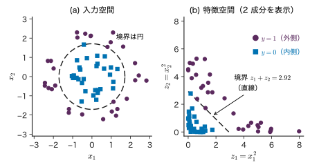
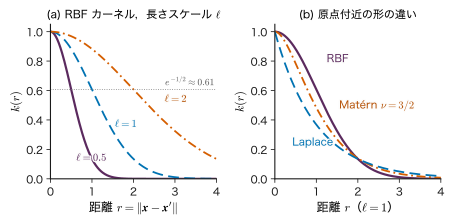
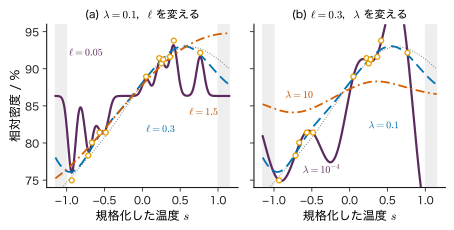
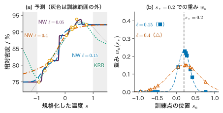

第10章カーネル法 — 類似度で学ぶ
- 2 つの記述子で表した試料が，内側の円と外側の輪に分かれて並んでいる．直線しか引けない線形モデルで，この 2 クラスを分けるにはどうするか．
- 「組成の近い材料は性質も近い」という経験則を，予測の式にそのまま書き込むことはできるか．そのとき「近い」はどう測ればよいか．
- 特徴を何万個にも増やすと計算が重くなりそうなのに，カーネル法はなぜ「無限個の特徴」まで扱えるのか．代わりに何が重くなるのか．
2 つの記述子 $x_1,x_2$ で表した試料が，原点のまわりの半径 1 付近（ガラス化した）と半径 2.2 付近（結晶化した）に分かれているとしよう．どんな直線を引いても，内側の円を外側の輪から切り離すことはできない．ところが，座標の 2 乗 $x_1^{2}$，$x_2^{2}$ を新しい座標にとると，内側の点は $x_1^{2}+x_2^{2}\approx1$，外側の点は $x_1^{2}+x_2^{2}\approx4.8$ の付近に移り，今度は 1 本の直線で分けられる．入力を別の空間へ写してから線形モデルを使う，というのが本章の出発点である．
写す先の空間（特徴空間）の次元を増やすほど表せる境界・曲線は豊かになるが，計算は重くなる．本章の要点は，Ridge 回帰などの解が特徴ベクトルどうしの内積だけで書けることである（双対表現）．内積を直接計算する関数 $k(\bm{x},\bm{x}')$ をカーネルと呼び，特徴ベクトルを作らずにカーネルだけで計算する工夫をカーネルトリックという．カーネルは「2 つの入力がどれだけ似ているか」を表す量とも読めるので，「似た材料は似た性質を持つ」という考え方をそのまま式にできる．本章では，どんな関数がカーネルとして使えるか（正定値性），代表的なカーネルと長さスケールの意味，カーネル Ridge 回帰，解がデータ点のカーネルの重ね合わせになる理由（リプレゼンター定理），重み付き平均としてのカーネル回帰（Attention の原型），そして計算量の限界を順に扱う．
- 同心円状の 2 クラスを特徴写像で線形分離できることを，具体的な点の座標で確かめられる．
- Ridge 回帰の解が $\bm{w}=\bm{\Phi}^{\tp}\bm{a}$，$\bm{a}=(\bm{K}+\lambda\bm{I})^{-1}\bm{y}$ と書けることを導き，主問題と双対問題の大きさ（$M$ と $N$）を比べられる．
- 多項式カーネル $(\bm{x}^{\tp}\bm{x}')^{2}$ を展開して特徴写像を書き出し，$(\bm{x}^{\tp}\bm{x}'+1)^{d}$ との違いを説明できる．
- Gram 行列が半正定値であることを証明し，カーネルの和・積などからカーネルを組み立てられる．与えられた関数がカーネルでないことを反例で示せる．
- RBF カーネルの長さスケール $\ell$ と正則化係数 $\lambda$ がカーネル Ridge 回帰の曲線をどう変えるかを，2 点の手計算と図で説明できる．
- Nadaraya–Watson のカーネル回帰を重み付き平均として計算し，Attention と同じ形であることを示せる．
- カーネル法の計算量 $O(N^{3})$ と記憶量 $O(N^{2})$ を見積もり，材料の記述子に求められる不変性を説明できる．
入門ルートで読む節：この章は詳しいルートの章である．入門ルートでは 10.12（まとめ）だけを読み，次の第11章も詳しいルートなので，第13章の 13.1〜13.3 節へ進んでよい．
記号：この章で使う記号
入力 $\bm{x}\in\R^{D}$，データ $\data=\{(\bm{x}_n,y_n)\}_{n=1}^{N}$，目標値をまとめた $\bm{y}=(y_1,\dots,y_N)^{\tp}\in\R^{N}$．特徴写像 $\bm{\phi}:\R^{D}\to\R^{M}$，計画行列 $\bm{\Phi}\in\R^{N\times M}$（第 $n$ 行が $\bm{\phi}(\bm{x}_n)^{\tp}$）．カーネル $k(\bm{x},\bm{x}')$，Gram 行列 $\bm{K}\in\R^{N\times N}$（$K_{nm}=k(\bm{x}_n,\bm{x}_m)$），テスト入力 $\bm{x}_*$ に対する $\bm{k}_*=(k(\bm{x}_1,\bm{x}_*),\dots,k(\bm{x}_N,\bm{x}_*))^{\tp}\in\R^{N}$．双対変数（データ点ごとの係数）$\bm{a}\in\R^{N}$．正則化係数 $\lambda\gt0$．分類のラベルは第9章と同じ $y\in\{0,1\}$ だが，10.5 節のシミュレーターは第11章の規約 $y\in\{-1,+1\}$ で表示する．
損失は第8・9章と同じくデータについての和で書く（第7章は平均で書いた．和で書くと $\lambda$ の大きさの目安が $N$ 倍違う）．なお第24章では同じ $\bm{K}$ を Key 行列の意味で使う．本章の $\bm{K}$ はすべて Gram 行列である．
10.1 特徴空間へ写す — 曲がった境界を直線にする詳しいルート
10.1.1 直線では分けられない配置
第9章の線形識別モデルは，判別関数 $f(\bm{x})=\bm{w}^{\tp}\bm{x}+b$ の符号でクラスを決める．決定境界 $f(\bm{x})=0$ は入力空間の直線（一般には超平面）である．図10.1(a) のように，一方のクラスが他方を取り囲む配置では，どの直線も両クラスの点を両側に残してしまう．
そこで入力 $\bm{x}=(x_1,x_2)^{\tp}$ を，次の特徴写像（feature map）で 3 次元の点に写す．
\begin{equation} \bm{\phi}(\bm{x})=\begin{pmatrix}x_1^{2}\\ x_2^{2}\\ \sqrt2\,x_1x_2\end{pmatrix}\in\R^{3} \label{eq:10-feature-map} \end{equation}第 3 成分の係数 $\sqrt2$ は，10.3 節で内積がきれいな形になるように付けた．写した先の座標を $\bm{z}=\bm{\phi}(\bm{x})$，$z_1=x_1^{2}$，$z_2=x_2^{2}$，$z_3=\sqrt2x_1x_2$ と書くと，
$$ z_1+z_2=x_1^{2}+x_2^{2}=r^{2} $$であり，原点からの距離の 2 乗 $r^{2}$ が特徴空間の座標の1 次式になる．したがって特徴空間の線形な判別関数 $g(\bm{z})=z_1+z_2-c$（$\bm{w}=(1,1,0)^{\tp}$，$b=-c$）を使えば，境界 $g=0$ は特徴空間では平面 $z_1+z_2=c$，入力空間では円 $x_1^{2}+x_2^{2}=c$ になる．「特徴空間で線形」なモデルが，入力空間では曲がった境界を表すのである．

np.random.default_rng(20261113)．$x_1,x_2$ は標準化した無次元の記述子とする．しきい値 $2.92$ は $r_0^{2}$ と $r_1^{2}$ の中点で，60 点中 59 点を正しく分ける．しきい値 $c=2.92$ は，内側の円の半径の 2 乗 $1.0^{2}=1$ と外側の輪の半径の 2 乗 $2.2^{2}=4.84$ の中点 $(1+4.84)/2$ として選んだ．図10.1(b) では，内側の点（■）が原点に近い三角形の領域に集まり，直線の外側には外側の点（●）が並ぶ．ノイズで半径が大きくずれた 1 点だけが反対側に入る．
10.1.2 特徴空間の線形モデル
一般に，入力 $\bm{x}\in\R^{D}$ を $M$ 個の基底関数を並べた特徴ベクトル $\bm{\phi}(\bm{x})=(\phi_1(\bm{x}),\dots,\phi_M(\bm{x}))^{\tp}\in\R^{M}$ に写し，
\begin{equation} f(\bm{x};\bm{w})=\bm{w}^{\tp}\bm{\phi}(\bm{x}) \label{eq:10-linear-model} \end{equation}（$\bm{w}\in\R^{M}$）とするのが第8章の基底関数モデルであった．「線形」は $\bm{w}$ について線形という意味で，$\bm{x}$ については曲がっていてよい．第9章のロジスティック回帰でも同じことができる．第9章のシミュレーター9.1（ロジスティック回帰のタブ）で同心円のデータを選び，特徴を「1 次」から「2 次項つき」（$x_1^{2}$，$x_1x_2$，$x_2^{2}$ を足す）に変えると，訓練の正解率が約 6 割から 100 % に上がり，境界が直線から楕円に変わる．
では，もっと複雑な境界が必要なら特徴をどんどん増やせばよいのか．$D$ 次元の入力から 3 次までのすべての単項式を作ると，特徴の数は $D=10$ で 286 個，$D=100$ で 176851 個になる（10.3 節）．特徴を陽に作って $M\times M$ の行列を扱うのは，すぐに現実的でなくなる．次節では，解がデータ点の数 $N$ の大きさの問題に書き直せることを示す．
例題10.1 4 点を特徴空間へ写す
内側の円の上の 2 点 $\bm{x}_A=(1,0)^{\tp}$，$\bm{x}_B=(0.6,0.8)^{\tp}$ と，外側の円の上の 2 点 $\bm{x}_C=(2,0)^{\tp}$，$\bm{x}_D=(-1.2,1.6)^{\tp}$ を考える．(1) 各点を式 \eqref{eq:10-feature-map} で写せ．(2) 特徴空間の判別関数 $g(\bm{z})=z_1+z_2-2.25$ の値を各点で求め，4 点が正しく分けられることを確かめよ．入力空間での境界は何か．(3) $\bm{\phi}(\bm{x}_A)^{\tp}\bm{\phi}(\bm{x}_B)$ と $(\bm{x}_A^{\tp}\bm{x}_B)^{2}$ を計算して比べよ．
解答 (1) $\sqrt2\approx1.4142$ を使う．
- $\bm{\phi}(\bm{x}_A)=(1,\ 0,\ 0)^{\tp}$
- $\bm{\phi}(\bm{x}_B)=(0.36,\ 0.64,\ 0.6788)^{\tp}$（第 3 成分は $\sqrt2\times0.48$）
- $\bm{\phi}(\bm{x}_C)=(4,\ 0,\ 0)^{\tp}$
- $\bm{\phi}(\bm{x}_D)=(1.44,\ 2.56,\ -2.7153)^{\tp}$（第 3 成分は $\sqrt2\times(-1.92)$）
(2) $g$ は第 3 成分を使わない．$g(A)=1+0-2.25=-1.25$，$g(B)=0.36+0.64-2.25=-1.25$，$g(C)=4+0-2.25=1.75$，$g(D)=1.44+2.56-2.25=1.75$．内側の 2 点は負，外側の 2 点は正なので正しく分けられる．$g=0$ は $x_1^{2}+x_2^{2}=2.25$，すなわち入力空間で半径 1.5 の円である．
(3) 特徴空間の内積は $\bm{\phi}(\bm{x}_A)^{\tp}\bm{\phi}(\bm{x}_B)$ $=1\times0.36+0\times0.64$ $+0\times0.6788=0.36$．一方 $\bm{x}_A^{\tp}\bm{x}_B=1\times0.6+0\times0.8=0.6$ なので $(\bm{x}_A^{\tp}\bm{x}_B)^{2}=0.36$．両者は一致する．特徴ベクトルを作らなくても，入力の内積を 2 乗するだけで特徴空間の内積が求まる．これが 10.3 節のカーネルトリックの最も簡単な例である．
10.2 双対表現 — 重みをデータの係数で書き直す詳しいルート
10.2.1 Ridge 回帰の解をもう一度見る
第8章の Ridge 回帰から出発する（第8章 8.6 節）．損失関数は
\begin{equation} L(\bm{w})=\frac12\norm{\bm{y}-\bm{\Phi}\bm{w}}^{2}+\frac{\lambda}{2}\norm{\bm{w}}^{2} \label{eq:10-ridge-loss} \end{equation}である（$\bm{w}\in\R^{M}$）．$\bm{\Phi}\bm{w}\in\R^{N}$ は全データ点での予測値を並べたベクトルである．勾配は $\nabla L(\bm{w})=-\bm{\Phi}^{\tp}(\bm{y}-\bm{\Phi}\bm{w})+\lambda\bm{w}$ で，これを $\bm{0}$ とおくと
\begin{equation} (\bm{\Phi}^{\tp}\bm{\Phi}+\lambda\bm{I}_M)\,\bm{w}=\bm{\Phi}^{\tp}\bm{y} \label{eq:10-primal} \end{equation}が得られる．$\bm{I}_M$ は $M\times M$ の単位行列である．解くべき行列 $\bm{\Phi}^{\tp}\bm{\Phi}+\lambda\bm{I}_M$ は $M\times M$ で，大きさは特徴の数 $M$ で決まる．これを主問題（primal problem）の形と呼ぶ．
10.2.2 重みはデータ点の特徴ベクトルの重ね合わせ
勾配が $\bm{0}$ という条件を，$\bm{w}$ について解かずに次のように並べ替える．
導出：双対表現
$\nabla L=\bm{0}$ の $\lambda\bm{w}$ の項だけを左辺に残し，両辺を $\lambda\gt0$ で割る．
$$ \begin{aligned} \lambda\bm{w}&=\bm{\Phi}^{\tp}(\bm{y}-\bm{\Phi}\bm{w})\\ \bm{w}&=\bm{\Phi}^{\tp}\,\frac{1}{\lambda}(\bm{y}-\bm{\Phi}\bm{w}) \end{aligned} $$右辺の $\frac{1}{\lambda}(\bm{y}-\bm{\Phi}\bm{w})$ は $N$ 次元のベクトルなので，これを $\bm{a}$ とおく．
\begin{align} \bm{a}&\equiv\frac{1}{\lambda}(\bm{y}-\bm{\Phi}\bm{w})\in\R^{N} \notag\\ \bm{w}&=\bm{\Phi}^{\tp}\bm{a}=\sum_{n=1}^{N}a_n\bm{\phi}(\bm{x}_n) \label{eq:10-dual-w} \end{align}$\bm{\Phi}^{\tp}$ の第 $n$ 列は $\bm{\phi}(\bm{x}_n)$ なので，$\bm{\Phi}^{\tp}\bm{a}$ は特徴ベクトルを係数 $a_n$ で足し合わせたものである．次に，$\bm{a}$ の定義に $\bm{w}=\bm{\Phi}^{\tp}\bm{a}$ を代入して $\bm{w}$ を消す．
$$ \begin{aligned} \lambda\bm{a}&=\bm{y}-\bm{\Phi}\bm{w}=\bm{y}-\bm{\Phi}\bm{\Phi}^{\tp}\bm{a}\\ \bm{\Phi}\bm{\Phi}^{\tp}\bm{a}+\lambda\bm{a}&=\bm{y}\\ (\bm{K}+\lambda\bm{I}_N)\,\bm{a}&=\bm{y},\qquad \bm{K}\equiv\bm{\Phi}\bm{\Phi}^{\tp}\in\R^{N\times N} \end{aligned} $$$\bm{K}$ は半正定値（10.4 節）なので，$\lambda\gt0$ なら $\bm{K}+\lambda\bm{I}_N$ の固有値はすべて $\lambda$ 以上で正則である．よって
\begin{equation} \bm{a}=(\bm{K}+\lambda\bm{I}_N)^{-1}\bm{y} \label{eq:10-dual-a} \end{equation}逆に，この $\bm{a}$ から $\bm{w}=\bm{\Phi}^{\tp}\bm{a}$ を作ると，上の変形を逆にたどって $\nabla L(\bm{w})=\bm{0}$ を満たす．$L$ は狭義凸なので（$\lambda\gt0$），これが唯一の最小点である．
（導出終わり）
$\bm{K}$ の $(n,m)$ 成分は
\begin{equation} K_{nm}=\bm{\phi}(\bm{x}_n)^{\tp}\bm{\phi}(\bm{x}_m) \label{eq:10-gram} \end{equation}で，データ点どうしの特徴ベクトルの内積である．$\bm{K}$ を Gram（グラム）行列という．新しい入力 $\bm{x}_*$ での予測は，$\bm{w}=\bm{\Phi}^{\tp}\bm{a}$ を代入して
\begin{align} f(\bm{x}_*)&=\bm{w}^{\tp}\bm{\phi}(\bm{x}_*) \notag\\ &=\bm{a}^{\tp}\bm{\Phi}\bm{\phi}(\bm{x}_*) \notag\\ &=\sum_{n=1}^{N}a_n\,\bm{\phi}(\bm{x}_n)^{\tp}\bm{\phi}(\bm{x}_*) \notag\\ &=\bm{k}_*^{\tp}\bm{a} \label{eq:10-dual-pred} \end{align}となる．ここで $\bm{k}_*=\bm{\Phi}\bm{\phi}(\bm{x}_*)\in\R^{N}$ の第 $n$ 成分は $\bm{\phi}(\bm{x}_n)^{\tp}\bm{\phi}(\bm{x}_*)$ である．学習（$\bm{a}$ を求める）にも予測にも，特徴ベクトルは内積の形でしか現れない．これが双対表現の要点である．
主問題と双対問題のどちらが得かは，$M$ と $N$ の大小で決まる（図10.2）．連立方程式を Cholesky 分解で解く手間は行列の大きさの 3 乗に比例するので，特徴が少なくデータが多い（$M\ll N$）なら主問題，特徴が多くデータが少ない（$M\gg N$）なら双対問題が軽い．材料のデータは数十〜数百点のことが多く，後者になりやすい．双対問題の本当の利点は次節で現れる．$M$ が無限大でも，内積さえ計算できれば双対問題は $N\times N$ のままなのである．
数学の道具：二つの形が同じ解を与える理由
式 \eqref{eq:10-primal} と \eqref{eq:10-dual-a} から，$\bm{w}$ は次の 2 通りに書ける．
$$ \begin{aligned} \bm{w}&=(\bm{\Phi}^{\tp}\bm{\Phi}+\lambda\bm{I}_M)^{-1}\bm{\Phi}^{\tp}\bm{y}\\ &=\bm{\Phi}^{\tp}(\bm{\Phi}\bm{\Phi}^{\tp}+\lambda\bm{I}_N)^{-1}\bm{y} \end{aligned} $$これは行列の恒等式
$$ \begin{aligned} &(\bm{\Phi}^{\tp}\bm{\Phi}+\lambda\bm{I}_M)^{-1}\bm{\Phi}^{\tp}\\ &=\bm{\Phi}^{\tp}(\bm{\Phi}\bm{\Phi}^{\tp}+\lambda\bm{I}_N)^{-1} \end{aligned} $$の言い換えでもある（演習10.2．押し通しの恒等式と呼ばれ，付録A の A.7 に一般の形がある）．$\bm{\Phi}^{\tp}(\bm{\Phi}\bm{\Phi}^{\tp}+\lambda\bm{I}_N)=(\bm{\Phi}^{\tp}\bm{\Phi}+\lambda\bm{I}_M)\bm{\Phi}^{\tp}$ の両辺に左右から逆行列を掛ければ示せる．実際の計算では逆行列を作らず，連立方程式として解く（10.9 節）．
例題10.2 3 点の直線当てはめを主問題と双対問題で解く
3 点 $(x_n,y_n)=(0,1),(1,3),(2,4)$ に，特徴 $\bm{\phi}(x)=(1,x)^{\tp}$（$M=2$）の Ridge 回帰を $\lambda=1$ で当てはめる（ここでは切片にも罰則をかける）．(1) 主問題 \eqref{eq:10-primal} を解いて $\bm{w}$ を求めよ．(2) Gram 行列 $\bm{K}$ を作り，双対問題 \eqref{eq:10-dual-a} の解 $\bm{a}$ を求め，$\bm{\Phi}^{\tp}\bm{a}$ が (1) の $\bm{w}$ に一致することを確かめよ．(3) $x_*=3$ での予測を両方の形で計算せよ．
解答 (1) $\bm{\Phi}=\begin{pmatrix}1&0\\1&1\\1&2\end{pmatrix}$ より $\bm{\Phi}^{\tp}\bm{\Phi}=\begin{pmatrix}3&3\\3&5\end{pmatrix}$，$\bm{\Phi}^{\tp}\bm{y}=\begin{pmatrix}1+3+4\\0+3+8\end{pmatrix}=\begin{pmatrix}8\\11\end{pmatrix}$．
$$ \begin{pmatrix}4&3\\3&6\end{pmatrix}\bm{w}=\begin{pmatrix}8\\11\end{pmatrix} $$行列式は $4\times6-3\times3=15$ なので，
$$ \begin{aligned} \bm{w}&=\frac{1}{15}\begin{pmatrix}6&-3\\-3&4\end{pmatrix}\begin{pmatrix}8\\11\end{pmatrix}\\ &=\frac{1}{15}\begin{pmatrix}15\\20\end{pmatrix}=\begin{pmatrix}1\\4/3\end{pmatrix} \end{aligned} $$(2) $K_{nm}=1+x_nx_m$ なので $\bm{K}=\begin{pmatrix}1&1&1\\1&2&3\\1&3&5\end{pmatrix}$．式 \eqref{eq:10-dual-w} の定義 $\bm{a}=(\bm{y}-\bm{\Phi}\bm{w})/\lambda$ を使うと，$\bm{\Phi}\bm{w}=(1,\ 7/3,\ 11/3)^{\tp}$ より $\bm{a}=(0,\ 2/3,\ 1/3)^{\tp}$．これが $(\bm{K}+\bm{I})\bm{a}=\bm{y}$ を満たすことを行ごとに確かめる．
$$ \begin{aligned} 2\cdot0+1\cdot\tfrac23+1\cdot\tfrac13&=1\\ 1\cdot0+3\cdot\tfrac23+3\cdot\tfrac13&=3\\ 1\cdot0+3\cdot\tfrac23+6\cdot\tfrac13&=4 \end{aligned} $$$\bm{\Phi}^{\tp}\bm{a}$ の第 1 成分は $0+\tfrac23+\tfrac13=1$，第 2 成分は $0+\tfrac23+2\cdot\tfrac13=\tfrac43$ で，(1) と一致する．
(3) 主問題では $f(3)=w_0+3w_1=1+4=5$．双対問題では $K$ の作り方と同じく $k(x_n,x_*)=1+x_nx_*$ なので $\bm{k}_*=(1,\ 4,\ 7)^{\tp}$ で，$\bm{k}_*^{\tp}\bm{a}=0+\tfrac83+\tfrac73=5$．一致する．
$a_1=0$ に注目する．$a_n=(y_n-f(x_n))/\lambda$ は点 $n$ の残差に比例するので，直線がちょうど通る点（$f(0)=1=y_1$）の係数は 0 になる．
なぜ切片の扱いに注意するのか
例題10.2 では定数の特徴 $\phi_0=1$ にも罰則をかけたので，直線は全体に 0 の側へ引き寄せられる．第8章で述べたように，実務では切片に罰則をかけない（第8章 8.6 節）．双対表現でこれを簡単に実現するには，目標値の平均 $\bar{y}$ を引いてから解き，予測に $\bar{y}$ を足すのがよい．本章の図10.4，10.5 と演習ではこの方法を使う．第12章のガウス過程では，同じことを「定数の平均関数 $m$」として扱う．
10.3 カーネル関数とカーネルトリック詳しいルート
10.3.1 内積を 1 つの関数で計算する
双対表現 \eqref{eq:10-dual-a}，\eqref{eq:10-dual-pred} に必要なのは，2 つの入力の特徴ベクトルの内積だけであった．そこで内積を直接与える関数を考える．
定義10.1 カーネル関数
入力の集合 $\mathcal{X}$（たとえば $\R^{D}$）の 2 点 $\bm{x},\bm{x}'$ に実数を対応させる関数 $k(\bm{x},\bm{x}')$ が，ある特徴写像 $\bm{\phi}$ を使って
\begin{equation} k(\bm{x},\bm{x}')=\bm{\phi}(\bm{x})^{\tp}\bm{\phi}(\bm{x}') \label{eq:10-kernel-def} \end{equation}と書けるとき，$k$ をカーネル関数（kernel function），または単にカーネルという．$\bm{\phi}$ の値は有限次元のベクトルでも，無限個の成分を持つ列（10.5 節）でもよい．定義から $k(\bm{x},\bm{x}')=k(\bm{x}',\bm{x})$（対称）である．
カーネルさえ計算できれば，Gram 行列 $K_{nm}=k(\bm{x}_n,\bm{x}_m)$ と $\bm{k}_*$ が作れ，式 \eqref{eq:10-dual-a} と \eqref{eq:10-dual-pred} で学習と予測ができる．特徴ベクトル $\bm{\phi}(\bm{x})$ は一度も作らなくてよい．このように，内積をカーネルで置き換えて特徴空間の計算を避ける工夫をカーネルトリック（kernel trick）という．
10.3.2 多項式カーネルを展開して特徴写像を見る
$D=2$ の入力について，入力の内積の 2 乗 $k(\bm{x},\bm{x}')=(\bm{x}^{\tp}\bm{x}')^{2}$ を展開する．
$$ \begin{aligned} (\bm{x}^{\tp}\bm{x}')^{2}&=(x_1x_1'+x_2x_2')^{2}\\ &=x_1^{2}x_1'^{2}+2x_1x_2x_1'x_2'+x_2^{2}x_2'^{2}\\ &=x_1^{2}\cdot x_1'^{2}+x_2^{2}\cdot x_2'^{2}\\ &\quad+(\sqrt2x_1x_2)(\sqrt2x_1'x_2') \end{aligned} $$最後の行は，式 \eqref{eq:10-feature-map} の $\bm{\phi}(\bm{x})=(x_1^{2},x_2^{2},\sqrt2x_1x_2)^{\tp}$ と $\bm{\phi}(\bm{x}')$ の内積そのものである．すなわち
\begin{equation} (\bm{x}^{\tp}\bm{x}')^{2}=\bm{\phi}(\bm{x})^{\tp}\bm{\phi}(\bm{x}') \label{eq:10-poly2-hom} \end{equation}であり，このカーネルは「2 次の単項式だけを並べた特徴空間」の内積を計算している．このように次数のそろった単項式だけを含むものを同次の多項式カーネルという．一般の $D$ では $(\bm{x}^{\tp}\bm{x}')^{2}=\sum_{i=1}^{D}\sum_{j=1}^{D}(x_ix_j)(x_i'x_j')$ なので，特徴は $D^{2}$ 個の積 $x_ix_j$（$x_ix_j=x_jx_i$ をまとめれば $D(D+1)/2$ 種類）である．
実際によく使うのは，定数 $c\gt0$ を足した非同次の形である．
\begin{equation} k(\bm{x},\bm{x}')=(\bm{x}^{\tp}\bm{x}'+c)^{d} \label{eq:10-poly-gen} \end{equation}$d$ は多項式の次数である（第6・8章と同じ記号）．$c=1$，$d=2$，$D=2$ で展開すると
$$ \begin{aligned} (\bm{x}^{\tp}\bm{x}'+1)^{2}&=(\bm{x}^{\tp}\bm{x}')^{2}+2\,\bm{x}^{\tp}\bm{x}'+1\\ &=x_1^{2}x_1'^{2}+x_2^{2}x_2'^{2}+2x_1x_2x_1'x_2'\\ &\quad+2x_1x_1'+2x_2x_2'+1 \end{aligned} $$となり，対応する特徴写像は
$$ \begin{aligned} \bm{\phi}(\bm{x})=\bigl(&1,\ \sqrt2x_1,\ \sqrt2x_2,\\ &x_1^{2},\ x_2^{2},\ \sqrt2x_1x_2\bigr)^{\tp}\in\R^{6} \end{aligned} $$である．同次の形 \eqref{eq:10-poly2-hom} との違いは，定数と 1 次の項を含むことである．同次の 2 次カーネルでは境界は原点について対称な 2 次曲線（$\bm{w}^{\tp}\bm{\phi}(\bm{x})=0$ が $x_1\to-x_1,x_2\to-x_2$ で変わらない）に限られるが，非同次なら中心のずれた楕円や放物線も表せる．$c$ は低次の項の重みを決める（$c$ を大きくすると低次の項の比重が増す．演習10.1）．10.5 節のシミュレーターの多項式カーネルは $c=1$ の $(\bm{x}^{\tp}\bm{x}'+1)^{d}$（$d=2,3$）である．
次数 $d$ 以下のすべての単項式を並べると，特徴の数は $\binom{D+d}{d}$ になる（変数 $x_1,\dots,x_D$ に「定数 1」を加えた $D+1$ 個から重複を許して $d$ 個選ぶ組合せの数）．$D=10$，$d=3$ で $\binom{13}{3}=286$，$D=100$，$d=3$ で $\binom{103}{3}=176851$ である．一方，カーネル \eqref{eq:10-poly-gen} の計算は内積 1 回（掛け算 $D$ 回）と累乗だけで済む．
例題10.3 カーネルと特徴写像で同じ値になることを確かめる
$\bm{x}=(1,2)^{\tp}$，$\bm{x}'=(3,-1)^{\tp}$ とする．(1) $(\bm{x}^{\tp}\bm{x}')^{2}$ を直接計算し，式 \eqref{eq:10-feature-map} の特徴ベクトルの内積と比べよ．(2) $(\bm{x}^{\tp}\bm{x}'+1)^{2}$ についても 6 次元の特徴ベクトルで確かめよ．(3) それぞれの計算で掛け算は何回必要か．
解答 (1) $\bm{x}^{\tp}\bm{x}'=1\times3+2\times(-1)=1$ なので $(\bm{x}^{\tp}\bm{x}')^{2}=1$．特徴ベクトルは $\bm{\phi}(\bm{x})=(1,\ 4,\ 2\sqrt2)^{\tp}$，$\bm{\phi}(\bm{x}')=(9,\ 1,\ -3\sqrt2)^{\tp}$ で，内積は $1\times9+4\times1$ $+2\sqrt2\times(-3\sqrt2)$ $=9+4-12=1$．一致する．
(2) $(\bm{x}^{\tp}\bm{x}'+1)^{2}=(1+1)^{2}=4$．特徴ベクトルは
で，内積は $1+6-4+9+4-12=4$．一致する．
(3) カーネルの直接計算は，内積に 2 回，2 乗に 1 回で計 3 回．特徴ベクトルの経路では，(2) の場合，各ベクトルを作るのに数回ずつ，内積に 6 回かかる．入力の次元 $D$ と次数 $d$ が大きくなると，この差は $\binom{D+d}{d}$ と $D$ の差として急に開く．
10.4 正定値カーネル — 使える類似度の条件詳しいルート
10.4.1 Gram 行列は半正定値
カーネルは「2 点の似ている度合い」と読めるので，類似度を自由に設計したくなる．しかし，任意の関数が式 \eqref{eq:10-kernel-def} の形に書けるわけではない．どの関数が使えるかを判定する条件を調べる．
定義10.2 正定値カーネル
対称な関数 $k(\bm{x},\bm{x}')=k(\bm{x}',\bm{x})$ が，任意の個数 $N$，任意の点 $\bm{x}_1,\dots,\bm{x}_N$，任意の実数 $c_1,\dots,c_N$ について
\begin{equation} \begin{aligned} &\bm{c}^{\tp}\bm{K}\bm{c}\\ &=\sum_{n,m}c_nc_m\,k(\bm{x}_n,\bm{x}_m)\\ &\ge0 \end{aligned} \label{eq:10-psd} \end{equation}を満たすとき，$k$ を正定値カーネル（positive definite kernel）という．すなわち，どの点の組に対しても Gram 行列 $\bm{K}\in\R^{N\times N}$ が半正定値（固有値がすべて 0 以上）であることを求める．「正定値」という名前だが不等号は等号を含む，という慣習に注意する．
定理10.1 特徴写像の内積は正定値カーネル
$k(\bm{x},\bm{x}')=\bm{\phi}(\bm{x})^{\tp}\bm{\phi}(\bm{x}')$ と書ける関数は，正定値カーネルである．
証明
対称性は内積の対称性から従う．任意の $N$，点，係数 $c_n$ について，ベクトル $\bm{v}\equiv\sum_{n}c_n\bm{\phi}(\bm{x}_n)$ を作り，二重和を内積の線形性でまとめる．
$$ \begin{aligned} &\sum_{n,m}c_nc_m\,k(\bm{x}_n,\bm{x}_m)\\ &=\sum_{n,m}c_nc_m\,\bm{\phi}(\bm{x}_n)^{\tp}\bm{\phi}(\bm{x}_m)\\ &=\Bigl(\sum_{n}c_n\bm{\phi}(\bm{x}_n)\Bigr)^{\tp}\Bigl(\sum_{m}c_m\bm{\phi}(\bm{x}_m)\Bigr)\\ &=\bm{v}^{\tp}\bm{v}=\norm{\bm{v}}^{2}\ \ge\ 0 \end{aligned} $$行列で書けば $\bm{K}=\bm{\Phi}\bm{\Phi}^{\tp}$ なので $\bm{c}^{\tp}\bm{K}\bm{c}=\norm{\bm{\Phi}^{\tp}\bm{c}}^{2}\ge0$ である．
（導出終わり）
逆向きも成り立つ．正定値カーネル $k$ が与えられれば，それを内積とする特徴空間（再生核 Hilbert 空間，reproducing kernel Hilbert space，RKHS）と特徴写像が必ず存在する（Moore–Aronszajn の定理．Aronszajn (1950)）．構成の考え方だけ述べると，特徴写像として「関数そのもの」$\bm{\phi}(\bm{x})=k(\bm{x},\cdot)$ を選び，内積を $\langle k(\bm{x},\cdot),k(\bm{x}',\cdot)\rangle=k(\bm{x},\bm{x}')$ と定める．正定値性 \eqref{eq:10-psd} は，こうして定めた内積で長さの 2 乗が負にならないことを保証する条件である．証明は本書では扱わない（Schölkopf & Smola (2002) の 2 章）．
したがって「カーネルとして使える」⇔「正定値」であり，候補の関数がカーネルかどうかは，内積の形に書き直すか，Gram 行列が半正定値かを調べればわかる．カーネルでない関数を使うと，$\bm{K}+\lambda\bm{I}$ が負の固有値を持って Cholesky 分解できなくなったり（$\lambda$ によっては特異にもなる），第11章の SVM の双対問題が凸でなくなったりする．
10.4.2 カーネルを組み立てる規則
定理10.2 カーネルの組み立て
$k_1,k_2$ を正定値カーネルとする．次もすべて正定値カーネルである．
- 和：$k_1(\bm{x},\bm{x}')+k_2(\bm{x},\bm{x}')$
- 正の定数倍：$c\,k_1(\bm{x},\bm{x}')$（$c\gt0$）
- 積：$k_1(\bm{x},\bm{x}')\,k_2(\bm{x},\bm{x}')$
- 関数による重み：$g(\bm{x})\,k_1(\bm{x},\bm{x}')\,g(\bm{x}')$（$g$ は任意の実数値関数）
- 入力の変換：$k_1(\bm{\psi}(\bm{x}),\bm{\psi}(\bm{x}'))$（$\bm{\psi}$ は任意の写像）
- 係数が 0 以上の多項式・べき級数：$\sum_{j\ge0}b_j\,k_1(\bm{x},\bm{x}')^{j}$（$b_j\ge0$，級数は収束するとする）．特に $\exp(k_1(\bm{x},\bm{x}'))$
証明
(1) Gram 行列で $\bm{c}^{\tp}(\bm{K}_1+\bm{K}_2)\bm{c}=\bm{c}^{\tp}\bm{K}_1\bm{c}+\bm{c}^{\tp}\bm{K}_2\bm{c}\ge0$．特徴写像で言えば，2 つの特徴ベクトルを縦につないだもの $(\bm{\phi}_1(\bm{x});\bm{\phi}_2(\bm{x}))$ の内積である．
(2) $\bm{c}^{\tp}(c\bm{K}_1)\bm{c}=c\,\bm{c}^{\tp}\bm{K}_1\bm{c}\ge0$．
(3) $k_1=\bm{\phi}^{\tp}\bm{\phi}'$，$k_2=\bm{\psi}^{\tp}\bm{\psi}'$（$\bm{\phi}=\bm{\phi}(\bm{x})$，$\bm{\phi}'=\bm{\phi}(\bm{x}')$ と略記）と書けば，
で，これは成分 $\phi_i\psi_j$ を全部並べた特徴ベクトルの内積である．
(4) $\bm{\phi}_g(\bm{x})=g(\bm{x})\bm{\phi}(\bm{x})$ の内積．Gram 行列で言えば $\bm{c}$ の代わりに $(c_ng(\bm{x}_n))_n$ を使えばよい．
(5) $\bm{\phi}(\bm{\psi}(\bm{x}))$ の内積．
(6) (3) を繰り返すと $k_1^{j}$ はカーネル（$k_1^{0}=1$ は 1 次元の特徴 1 の内積）．(1)(2) で有限和はカーネル．無限級数は有限和の極限で，$\bm{c}^{\tp}\bm{K}\bm{c}\ge0$ は極限でも保たれる．$\exp(t)=\sum_{j\ge0}t^{j}/j!$ の係数はすべて正である．
（導出終わり）
この規則で RBF カーネル（10.5 節）が正定値であることが示せる．$\norm{\bm{x}-\bm{x}'}^{2}=\norm{\bm{x}}^{2}-2\bm{x}^{\tp}\bm{x}'+\norm{\bm{x}'}^{2}$ を指数に入れると
$$ \begin{aligned} &\exp\!\left(-\frac{\norm{\bm{x}-\bm{x}'}^{2}}{2\ell^{2}}\right)\\ &=e^{-\norm{\bm{x}}^{2}/(2\ell^{2})}\,\exp\!\left(\frac{\bm{x}^{\tp}\bm{x}'}{\ell^{2}}\right)\,e^{-\norm{\bm{x}'}^{2}/(2\ell^{2})} \end{aligned} $$となる．中央の因子は線形カーネル $\bm{x}^{\tp}\bm{x}'/\ell^{2}$ の指数なので規則 (2)(6) でカーネル，両側の因子は規則 (4) の $g(\bm{x})=e^{-\norm{\bm{x}}^{2}/(2\ell^{2})}$ である．
例題10.4 カーネルかどうかを判定する
1 次元の入力 $x\in\R$ について，次の関数は正定値カーネルか．(1) $k(x,x')=(x-x')^{2}$．(2) $k(x,x')=xx'-1$．(3) $k(x,x')=(xx')^{2}+2e^{-(x-x')^{2}/2}$．(4) RBF カーネル（$\ell=1$）の 3 点 $x=0,1,2$ の Gram 行列の固有値を求め，定理10.1 と矛盾しないことを確かめよ．
解答 (1) 2 点 $x_1=0$，$x_2=1$ の Gram 行列は $\begin{pmatrix}0&1\\1&0\end{pmatrix}$．$\bm{c}=(1,-1)^{\tp}$ で $\bm{c}^{\tp}\bm{K}\bm{c}=0-1-1+0=-2\lt0$（固有値は $\pm1$）．正定値でない．距離の 2 乗は「似ていない度合い」なので，そのままでは類似度にならない．
(2) 1 点 $x_1=0$ だけで $\bm{K}=(-1)$，$c_1=1$ で $-1\lt0$．正定値でない（$k(x,x)\ge0$ は必要条件である）．
(3) $(xx')^{2}$ は特徴 $\phi(x)=x^{2}$ の内積，$e^{-(x-x')^{2}/2}$ は RBF カーネル．定数倍 2 と和の規則で正定値である．
(4) $e^{-1/2}=0.6065$，$e^{-2}=0.1353$ より
対称な並びを使う．$(1,0,-1)^{\tp}$ は固有ベクトルで，固有値は $1-0.1353=0.8647$．残りの 2 つは $(1,t,1)^{\tp}$ の形で，$1+0.1353+0.6065\,t=\mu$，$2\times0.6065+t=\mu t$ を解くと $\mu=0.2072$ と $1.9281$．3 つとも正なので，定理10.1 のとおり半正定値（この例では正定値）である．固有値の和 $0.2072+0.8647+1.9281=3.000$ は対角成分の和 $\tr\bm{K}=3$ に一致する．
10.5 代表的なカーネルと長さスケール詳しいルート
10.5.1 カーネルの一覧
よく使うカーネルを表10.1にまとめる．$r=\norm{\bm{x}-\bm{x}'}$ は 2 点の Euclid 距離である．
| 名前 | 式 | 対応する特徴・性質 |
|---|---|---|
| 線形 | $\bm{x}^{\tp}\bm{x}'$ | 入力そのもの（$\bm{\phi}(\bm{x})=\bm{x}$）．Ridge 回帰に戻る |
| 多項式 | $(\bm{x}^{\tp}\bm{x}'+c)^{d}$ | 次数 $d$ 以下の単項式 $\binom{D+d}{d}$ 個 |
| RBF（Gauss） | $\sigma_f^{2}\exp\!\bigl(-r^{2}/(2\ell^{2})\bigr)$ | 無限次元．何回でも微分できる滑らかな関数 |
| Laplace | $\sigma_f^{2}\exp(-r/\ell)$ | 無限次元．1 次元では連続だが微分できない折れ線状の関数 |
| Matérn（$\nu=3/2$） | $\sigma_f^{2}\bigl(1+\sqrt3\,r/\ell\bigr)e^{-\sqrt3\,r/\ell}$ | 1 回だけ微分できる関数．$\nu$ で滑らかさを調節 |
RBF（radial basis function，動径基底関数）カーネルは，本書では次の形で書く．
\begin{equation} k(\bm{x},\bm{x}')=\sigma_f^{2}\exp\!\bigl(-\norm{\bm{x}-\bm{x}'}^{2}/(2\ell^{2})\bigr) \label{eq:10-rbf} \end{equation}距離だけに依存するカーネルを定常（stationary）なカーネルという．定常なカーネルは「入力空間のどこでも，同じ距離なら同じだけ似ている」という仮定を表す．SVM の文献では $\sigma_f=1$ とし，$\gamma=1/(2\ell^{2})$ を使って $\exp(-\gamma\norm{\bm{x}-\bm{x}'}^{2})$ と書くことが多い（第11章）．Matérn カーネルは $\nu$ を $\tfrac12,\tfrac32,\tfrac52,\dots$ と選ぶと，$\nu=\tfrac12$ で Laplace カーネル，$\nu\to\infty$ で RBF カーネルになる族である．一般形と性質は Rasmussen & Williams (2006) の 4 章に詳しい．
10.5.2 長さスケール $\ell$ の意味
RBF カーネルの値は，距離 $r=0$ で最大値 $\sigma_f^{2}$ をとり，$r=\ell$ で $\sigma_f^{2}e^{-1/2}\approx0.61\,\sigma_f^{2}$，$r=2\ell$ で $0.14\,\sigma_f^{2}$，$r=3\ell$ で $0.011\,\sigma_f^{2}$ まで下がる（図10.3(a)）．つまり $\ell$ は「どれくらい離れた点までを似ているとみなすか」の距離である．$\ell$ は入力と同じ単位を持つ（入力が温度 °C なら $\ell$ も °C）．記述子ごとに単位や桁が違うときは，標準化してから 1 つの $\ell$ を使うか，次元ごとに別の $\ell_i$ を持たせる（$\sum_i(x_i-x_i')^{2}/(2\ell_i^{2})$）．

図10.3(b) の原点付近の形の違いは，予測される関数の滑らかさの違いになる．RBF は原点で平らなので，近い 2 点はほぼ同じ値をとり，曲線は非常に滑らかになる．Laplace は原点で尖っているので，近い 2 点でも値の差が残り，折れ線に近いでこぼこした関数を許す．材料の性質が組成に対して滑らかに変わると期待できるなら RBF や Matérn $\nu=5/2$，相境界などで急に変わりうるなら Laplace や短い $\ell$，という選び方になる（10.9 節）．
導出：1 次元の RBF カーネルは無限次元の特徴の内積
$\sigma_f=1$，入力 $x,x'\in\R$ とする．10.4 節の分解を 1 次元で書き，中央の因子を指数関数の Taylor 展開 $e^{t}=\sum_{j=0}^{\infty}t^{j}/j!$ で展開する．
$$ \begin{aligned} k(x,x')&=e^{-x^{2}/(2\ell^{2})}\,e^{xx'/\ell^{2}}\,e^{-x'^{2}/(2\ell^{2})}\\ &=e^{-x^{2}/(2\ell^{2})}\Bigl(\sum_{j=0}^{\infty}\frac{1}{j!}\Bigl(\frac{xx'}{\ell^{2}}\Bigr)^{j}\Bigr)e^{-x'^{2}/(2\ell^{2})}\\ &=\sum_{j=0}^{\infty}\Bigl(e^{-x^{2}/(2\ell^{2})}\frac{x^{j}}{\ell^{j}\sqrt{j!}}\Bigr)\\ &\qquad\times\Bigl(e^{-x'^{2}/(2\ell^{2})}\frac{x'^{j}}{\ell^{j}\sqrt{j!}}\Bigr) \end{aligned} $$3〜4 行目は，$(xx')^{j}/(\ell^{2j}j!)$ を $x$ だけの因子と $x'$ だけの因子に $\sqrt{j!}$ ずつ分けた．したがって
$$ \phi_j(x)=e^{-x^{2}/(2\ell^{2})}\,\frac{x^{j}}{\ell^{j}\sqrt{j!}} $$（$j=0,1,2,\dots$）とおけば $k(x,x')=\sum_{j=0}^{\infty}\phi_j(x)\phi_j(x')$ である．RBF カーネルは，Gauss 型の窓 $e^{-x^{2}/(2\ell^{2})}$ を掛けたすべての次数の単項式を並べた，無限次元の特徴空間の内積を計算している．$1/\sqrt{j!}$ の因子のため高次の成分ほど小さく，級数は収束する．特徴ベクトルを作ることはできないが，カーネルの値は指数関数 1 回で計算できる．
（導出終わり）
例題10.5 長さスケールと類似度の値
標準化した記述子の空間で，2 つの試料の距離が $r=0.5$ であった．(1) RBF カーネル（$\sigma_f=1$）の値を $\ell=0.25,\ 1,\ 4$ で求め，それぞれ「似ている」とみなされるかを述べよ．(2) SVM の慣例の幅 $\gamma=1$ は $\ell$ でいくつか．(3) $\gamma=1$ のとき，距離の 2 乗が $0.273$ の 2 点のカーネルの値を求めよ．
解答 (1) $r^{2}=0.25$．
- $\ell=0.25$：$\exp\bigl(-0.25/(2\times0.0625)\bigr)=e^{-2}=0.135$．距離が $2\ell$ なので，ほとんど似ていないとみなされる．
- $\ell=1$：$\exp(-0.25/2)=e^{-0.125}=0.882$．かなり似ている．
- $\ell=4$：$\exp(-0.25/32)=0.992$．ほぼ同じとみなされる．
同じ 2 点でも，$\ell$ しだいで類似度は 0.14 から 0.99 まで変わる．$\ell$ は「予測を各試料のどのくらい近くまで効かせるか」というモデルの仮定であり，データから選ぶ必要がある（10.9 節，第12章 12.7 節）．
(2) $\gamma=1/(2\ell^{2})=1$ より $\ell=1/\sqrt2=0.707$．
(3) $\exp(-\gamma r^{2})=\exp(-1\times0.273)$ $=e^{-0.273}=0.761$．この値は，次のシミュレーターの既定の状態で「最大の項のカーネルの値」として表示される．
カーネルの幅が分類の境界をどう変えるかは，次のシミュレーターで確かめられる．この装置は第11章のサポートベクトルマシン（SVM）の装置で，ここではカーネルの役割だけを見る．装置は $\sigma_f=1$ の RBF カーネルを $\exp(-\gamma\norm{\bm{x}-\bm{x}'}^{2})$，$\gamma=1/(2\ell^{2})$ の形で使い，多項式カーネルは $c=1$ に固定した $(\bm{x}^{\tp}\bm{x}'+1)^{d}$ である．ラベルは第11章の規約 $y\in\{-1,+1\}$ で表示され，画面のスコア $f(\bm{x})$ は確率ではない．SVM の式の意味（マージン，サポートベクトル，$C$）は第11章で説明する．ここでは「$f(\bm{x})$ は，サポートベクトルと呼ばれる一部の訓練点 $\bm{x}_n$ のカーネル $k(\bm{x}_n,\bm{x})$ に係数を掛けて足し合わせ，定数 $b$ を足したもの」とだけ理解しておけばよい．これは式 \eqref{eq:10-dual-pred} と同じ形である．
シミュレーター10.1 カーネルの幅と境界の形
教育用の合成データ（2 つの記述子で表した 2 クラスの点）に，カーネルを使う分類器（SVM）を当てはめ，RBF カーネルの幅 $\gamma=1/(2\ell^{2})$ やカーネルの種類を変えたときに，境界の形とスコア $f(\bm{x})$ の値がどう変わるかを確かめる装置である．
操作と観察
- 開いた直後の既定（データの型「三日月」，データ数 $N=60$，seed 20261112，カーネル「RBF（Gauss）」，$C=1.00$，$\gamma=1.00$（ℓ = 0.707））のまま見る → 読み出しは サポートベクトル 22 個（○ 18，◇ 4），マージン幅 0.5812，訓練の正解率 100 %．境界（実線）は 2 つの三日月の間を曲がって通る．調べる点 $(0.5,\ 0.5)$ で $f=-1.2578$．「いまの数値を式に入れると」の「最大の項のカーネルの値」が $\exp(-1.000\times0.273)=0.7610$ であることを，式 \eqref{eq:10-rbf} に $\ell=0.707$ を入れた値（例題10.5 (3)）と比べる．
- $\gamma$ のスライダーを左へ動かして 0.100（ℓ = 2.24）にする → サポートベクトル 26 個（○ 5，◇ 21），マージン幅 0.6014，正解率 93.3 %．境界は緩やかな曲線になり，三日月の先端の点を取りこぼす．調べる点の $f=-0.5196$．
- $\gamma$ を 10.0（ℓ = 0.224）にする → サポートベクトル 51 個（○ 49，◇ 2），マージン幅 0.3731，正解率 100 %．境界は個々の点に沿って細かく曲がる．
- $\gamma$ を 100（ℓ = 0.0707）にする → サポートベクトル 60 個（全点），調べる点の $f=-0.0831$．$b=-0.0277$ に近い．スコアの濃淡は各点のまわりの小さな島になり，点から離れた所は白（$f\approx b$）に戻る．図10.4(a) の $\ell=0.05$ の曲線が点の間で平均に戻るのと同じ現象である．
- $\gamma$ を 1.00 に戻し，データの型を「同心円」にする．カーネルを「線形」にする → 正解率 70.0 %（境界は直線）．「多項式 2 次」にする → 正解率 100 %，サポートベクトル 7 個（○ 6，◇ 1），境界は楕円になる．10.1 節の特徴写像 \eqref{eq:10-feature-map} と，多項式カーネル \eqref{eq:10-poly-gen} の関係を確かめる．
操作後の問い
- 手順 2〜4 で $\gamma$ を大きくすると，なぜ境界が細かく曲がるのか．$\ell$ の言葉で説明せよ．
答えの例
$\gamma$ を大きくすると $\ell=1/\sqrt{2\gamma}$ が短くなり，カーネル $k(\bm{x}_n,\bm{x})$ は $\bm{x}_n$ から $\ell$ 程度の範囲でしか値を持たない．$f(\bm{x})$ はカーネルの重ね合わせなので，各訓練点のまわりの小さな山（谷）の和になり，境界は点の配置に細かく沿う．訓練の正解率は上がるが，新しい点への当たりは悪くなりうる（過学習．第6章）．逆に $\ell$ が長いと，遠くの点まで似ているとみなされ，境界は緩やかになる．
- 手順 4 で，調べる点の $f$ が $b$ に近くなるのはなぜか．回帰の場合に同じことが起こる例を本章から挙げよ．
答えの例
$\ell=0.0707$ では，調べる点 $(0.5,0.5)$ から最も近い訓練点までの距離（約 0.17）でもカーネルの値は $\exp(-100\times0.029)\approx0.06$ と小さく，他の点の項はさらに小さい．和の部分がほぼ 0 になり，$f\approx b$ が残る．カーネル Ridge 回帰でも，$\ell$ が短いとデータ点の間やデータ範囲の外で予測が平均（中心化した値の 0）に戻る（図10.4(a)，例題10.6 (3)）．
- 手順 5 で線形カーネルでは正解率が 70 % にとどまるのに，多項式 2 次では 100 % になるのはなぜか．
答えの例
線形カーネルでは境界は入力空間の直線で，内側の円を外側の輪から切り離せない．多項式 2 次カーネル $(\bm{x}^{\tp}\bm{x}'+1)^{2}$ は，$x_1^{2}$，$x_2^{2}$，$x_1x_2$ を含む 6 次元の特徴空間の内積なので，その空間の線形な境界は入力空間の 2 次曲線（ここでは楕円）になり，10.1 節と同じ理由で分けられる．
10.6 カーネル Ridge 回帰詳しいルート
10.6.1 式のまとめ
10.2 節の双対表現の内積をカーネルで置き換えたものがカーネル Ridge 回帰（kernel ridge regression，KRR）である．
予測 $f(\bm{x}_*)$ は，各データ点を中心に置いたカーネルの山 $k(\bm{x}_n,\cdot)$ を係数 $a_n$ で重ね合わせた関数である．RBF カーネルなら，$N$ 個の Gauss 型の山を足したものになる．$a_n$ の単位は「$y$ の単位 ÷ カーネルの単位」で，$\sigma_f=1$ のカーネルなら $y$ と同じ単位である．10.2 節のなぜの囲みで述べたように，実際には目標値の平均 $\bar{y}$ を引いた $\bm{y}-\bar{y}\bm{1}$ で $\bm{a}$ を求め，予測に $\bar{y}$ を足す．
$\lambda$ の役割を見るため，$\bm{K}$ の固有値分解 $\bm{K}=\sum_i\mu_i\bm{u}_i\bm{u}_i^{\tp}$（$\mu_i\ge0$，$\bm{u}_i$ は正規直交）を使う．訓練点での予測値は
$$ \bm{K}\bm{a}=\sum_i\frac{\mu_i}{\mu_i+\lambda}\,\bm{u}_i\bigl(\bm{u}_i^{\tp}\bm{y}\bigr) $$となる．$\mu_i\gg\lambda$ の成分（データ全体にわたるゆっくりした変化）はほぼそのまま通し，$\mu_i\ll\lambda$ の成分（細かい凹凸）は $\mu_i/\lambda$ 倍に縮める．$\lambda\to0$ では全成分を通すので，$\bm{K}$ が正則なら訓練点を正確に通る補間になる．
例題10.6 2 点のカーネル Ridge 回帰を手で解く
2 点 $(x_1,y_1)=(0,1)$，$(x_2,y_2)=(1,2)$ に，RBF カーネル（$\sigma_f=1$，$\ell=1$），$\lambda=0.1$ のカーネル Ridge 回帰を当てはめる（ここでは平均を引かない）．(1) $\bm{K}$ と $\bm{a}$ を求めよ．(2) $f(0)$，$f(1)$，$f(0.5)$ を求めよ．(3) $f(3)$ と $f(-2)$ を求め，データから離れると予測がどうなるかを述べよ．
解答 (1) $c\equiv k(0,1)=e^{-1/2}=0.60653$ なので $\bm{K}=\begin{pmatrix}1&c\\c&1\end{pmatrix}$．$\bm{K}+0.1\bm{I}=\begin{pmatrix}1.1&c\\c&1.1\end{pmatrix}$ の行列式は $1.21-c^{2}=1.21-0.36788=0.84212$．2×2 の逆行列の公式から
$$ \begin{aligned} \bm{a}&=\frac{1}{0.84212}\begin{pmatrix}1.1&-c\\-c&1.1\end{pmatrix}\begin{pmatrix}1\\2\end{pmatrix}\\ &=\frac{1}{0.84212}\begin{pmatrix}1.1-1.21306\\-0.60653+2.2\end{pmatrix}\\ &=\begin{pmatrix}-0.1343\\1.8922\end{pmatrix} \end{aligned} $$(2) $f(0)=a_1+c\,a_2$ $=-0.1343+1.1477=1.0134$，$f(1)=c\,a_1+a_2$ $=-0.0814+1.8922=1.8108$．$\lambda\gt0$ のため観測値 1，2 から少し縮んでいる．$f(0.5)$ では $k(0,0.5)=k(1,0.5)=e^{-0.125}=0.8825$ なので $f(0.5)=0.8825\times(a_1+a_2)$ $=0.8825\times1.7579=1.5514$．
(3) $e^{-4.5}=0.0111$，$e^{-2}=0.1353$ を使う．
データから $\ell$ の数倍離れるとカーネルの値が 0 に近づき，予測は 0 へ戻る．平均を引かずに解いたので「0 へ戻る」が「データの平均へ戻る」にならず，外挿として不自然である．これが平均を引いてから解く理由の 1 つである．
10.6.2 データ A で $\ell$ と $\lambda$ を変える

np.random.default_rng(20261110)．温度は $T=1300+200s$ °C．図10.4 は，第6章で使ったデータ A の 12 点にカーネル Ridge 回帰を当てはめたものである．この標本は偶然 $s=-0.48$ から $0.05$ の間と $s\gt0.76$ に点がない．
- $\ell$ が短すぎる（(a) の $\ell=0.05$）：各点のまわり $\pm0.1$ 程度にしか影響が及ばず，点の間では平均 $86.3\ \%$ へ戻る．訓練点の近くは合うが，点のない所の予測は役に立たない．
- $\ell$ が長すぎる（(a) の $\ell=1.5$）：区間全体がほぼ「同じくらい似ている」ので，表せる曲線が緩やかになりすぎ，$s\approx0.4$ 付近の頂上を表せない．範囲の外では上がり続ける．
- $\lambda$ が小さすぎる（(b) の $\lambda=10^{-4}$）：ほぼ補間になり，係数の最大の大きさが $\max_n\abs{a_n}\approx3.6\times10^{3}$ まで膨らむ．ノイズまで通すので点の間と点のない領域で大きく振れる．
- $\lambda$ が大きすぎる（(b) の $\lambda=10$）：$\mu_i/(\mu_i+\lambda)$ がどの成分でも小さく，曲線全体が平均の方へ縮む．
$\ell=0.3$，$\lambda=0.1$ は真の関数に近い．ただしこの組は図を見て選んだもので，実際には交差検証（第6章 6.5 節）か，第12章の周辺尤度（12.7 節）で選ぶ．なお，カーネル Ridge 回帰の予測は，第12章のガウス過程回帰（12.9 節）で同じカーネルを使い $\lambda=\sigma^{2}$（ノイズの分散）とした予測の平均と一致する．ガウス過程はそれに加えて予測の不確かさを与える．
10.7 リプレゼンター定理 — 解はデータ点の重ね合わせ詳しいルート
10.7.1 関数そのものを未知数にする
10.2 節では「重み $\bm{w}$ を求める」問題を出発点にし，その解がデータ点の特徴ベクトルの重ね合わせになることを示した．無限次元の特徴を持つ RBF カーネルでは，$\bm{w}$ そのものを書き下せない．そこで，未知数を重みではなく関数 $f$ そのものにとり，「どんな形の $f$ を探せばよいか」を問う．答えを与えるのがリプレゼンター定理（representer theorem）である．
正定値カーネル $k$ に対応する関数の空間 $\mathcal{H}$（10.4 節の RKHS）を考える．$\mathcal{H}$ は，有限個の点 $\bm{z}_1,\dots,\bm{z}_J$ と係数 $b_j$ で作った関数 $g(\cdot)=\sum_{j}b_j\,k(\bm{z}_j,\cdot)$ を全部集め，その極限も加えた空間である．内積は $\langle k(\bm{x},\cdot),k(\bm{x}',\cdot)\rangle_{\mathcal{H}}=k(\bm{x},\bm{x}')$ を線形に広げて定める．次の 2 つの性質だけを使う．
- 再生性：任意の $f\in\mathcal{H}$ と点 $\bm{x}$ について $f(\bm{x})=\langle f,\ k(\bm{x},\cdot)\rangle_{\mathcal{H}}$．$f=\sum_jb_jk(\bm{z}_j,\cdot)$ なら，右辺は $\sum_jb_jk(\bm{z}_j,\bm{x})=f(\bm{x})$ で，確かに成り立つ．「関数値を取り出す操作が内積で書ける」ことが名前の由来である．
- ノルム：$f=\sum_{n}a_nk(\bm{x}_n,\cdot)$ なら $\norm{f}_{\mathcal{H}}^{2}=\sum_{n,m}a_na_mk(\bm{x}_n,\bm{x}_m)=\bm{a}^{\tp}\bm{K}\bm{a}$．このノルムは関数の「複雑さ」を測る．RBF カーネルでは，$\ell$ に比べて細かく振れる関数ほどノルムが大きい．
定理10.3 リプレゼンター定理
データ $\{(\bm{x}_n,y_n)\}_{n=1}^{N}$，各点の損失 $\ell_n(\cdot)$（$f(\bm{x}_n)$ の値だけに依存する任意の関数），狭義単調増加な関数 $\Omega:[0,\infty)\to\R$ について，
$$ \min_{f\in\mathcal{H}}\ \sum_{n=1}^{N}\ell_n\bigl(f(\bm{x}_n)\bigr)+\Omega\bigl(\norm{f}_{\mathcal{H}}\bigr) $$の最小点は（存在すれば）すべて次の形をしている．
\begin{equation} f(\cdot)=\sum_{n=1}^{N}a_n\,k(\bm{x}_n,\cdot) \label{eq:10-representer} \end{equation}ここで $\bm{a}=(a_1,\dots,a_N)^{\tp}\in\R^{N}$ は実数の係数である．
証明
データ点のカーネルが張る部分空間 $\mathcal{S}=\{\sum_na_nk(\bm{x}_n,\cdot)\}$ を考え，任意の $f\in\mathcal{H}$ を $\mathcal{S}$ の成分と，$\mathcal{S}$ に直交する成分に分ける：$f=f_{\parallel}+f_{\perp}$，$f_{\parallel}\in\mathcal{S}$，$\langle f_{\perp},k(\bm{x}_n,\cdot)\rangle_{\mathcal{H}}=0$（すべての $n$）．
(i) データ点での値は $f_{\perp}$ によらない．再生性と内積の線形性から
$$ \begin{aligned} f(\bm{x}_n)&=\langle f_{\parallel}+f_{\perp},\ k(\bm{x}_n,\cdot)\rangle_{\mathcal{H}}\\ &=\langle f_{\parallel},\ k(\bm{x}_n,\cdot)\rangle_{\mathcal{H}}+0=f_{\parallel}(\bm{x}_n) \end{aligned} $$なので，損失の項 $\sum_n\ell_n(f(\bm{x}_n))$ は $f$ と $f_{\parallel}$ で同じ値である．
(ii) ノルムは $f_{\perp}$ の分だけ大きい．直交するので Pythagoras の定理 $\norm{f}_{\mathcal{H}}^{2}=\norm{f_{\parallel}}_{\mathcal{H}}^{2}+\norm{f_{\perp}}_{\mathcal{H}}^{2}$ が成り立ち，$f_{\perp}\ne0$ なら $\norm{f}_{\mathcal{H}}\gt\norm{f_{\parallel}}_{\mathcal{H}}$．$\Omega$ は狭義単調増加なので $\Omega(\norm{f}_{\mathcal{H}})\gt\Omega(\norm{f_{\parallel}}_{\mathcal{H}})$．
(i)(ii) より，$f_{\perp}\ne0$ の $f$ は $f_{\parallel}$ より目的関数が真に大きく，最小点になりえない．よって最小点は $f_{\perp}=0$，すなわち $\mathcal{S}$ の元である．
（導出終わり）
この定理の意味は大きい．探す関数が無限次元の空間の元であっても，最適解はデータ点の数 $N$ 個の係数で書ける．損失は二乗損失に限らないので，第11章の SVM（ヒンジ損失），カーネル版のロジスティック回帰（交差エントロピー損失）にも同じ形が現れる．第12章のガウス過程回帰の予測の平均 $\bm{k}_*^{\tp}\bm{K}_y^{-1}\bm{y}$ も同じ形である．歴史的には Kimeldorf & Wahba (1971) がスプラインの文脈で示し，Schölkopf, Herbrich & Smola (2001) が一般の損失と正則化項に広げた．
例題10.7 リプレゼンター定理からカーネル Ridge 回帰を導く
目的関数 $J(f)=\frac12\sum_{n=1}^{N}\bigl(y_n-f(\bm{x}_n)\bigr)^{2}+\frac{\lambda}{2}\norm{f}_{\mathcal{H}}^{2}$ を考える．(1) $\Omega$ に当たる関数は何か．狭義単調増加か．(2) 式 \eqref{eq:10-representer} を代入して $J$ を $\bm{a}$ の関数で書け．(3) $\bm{a}=(\bm{K}+\lambda\bm{I})^{-1}\bm{y}$ が最小点であることを示せ．(4) 例題10.6 の数値で $J$ の勾配が 0 であることを確かめよ．
解答 (1) $\Omega(t)=\frac{\lambda}{2}t^{2}$．$t\ge0$ で $\lambda\gt0$ なら狭義単調増加である．
(2) $f(\bm{x}_m)=\sum_na_nk(\bm{x}_n,\bm{x}_m)=(\bm{K}\bm{a})_m$（$\bm{K}$ は対称）と $\norm{f}_{\mathcal{H}}^{2}=\bm{a}^{\tp}\bm{K}\bm{a}$ を使う．
(3) 勾配を成分で計算する．第 1 項の勾配は $-\bm{K}^{\tp}(\bm{y}-\bm{K}\bm{a})=-\bm{K}(\bm{y}-\bm{K}\bm{a})$，第 2 項は $\lambda\bm{K}\bm{a}$（$\bm{K}$ が対称なので $\nabla_{\bm{a}}\,\bm{a}^{\tp}\bm{K}\bm{a}=2\bm{K}\bm{a}$）．
$$ \begin{aligned} \nabla J(\bm{a})&=-\bm{K}(\bm{y}-\bm{K}\bm{a})+\lambda\bm{K}\bm{a}\\ &=\bm{K}\bigl[(\bm{K}+\lambda\bm{I})\bm{a}-\bm{y}\bigr] \end{aligned} $$$(\bm{K}+\lambda\bm{I})\bm{a}=\bm{y}$ なら角括弧が $\bm{0}$ なので勾配は $\bm{0}$．Hesse 行列 $\bm{K}^{2}+\lambda\bm{K}$ は半正定値なので $J$ は凸で，勾配 0 の点は最小点である．（$\bm{K}$ が特異なら $\bm{K}$ の零空間の分だけ $\bm{a}$ は一意でないが，そのずれは $\bm{K}\bm{a}$ と $f$ を変えない．）
(4) 例題10.6 の $\bm{a}=(-0.1343,\ 1.8922)^{\tp}$ では $\bm{K}\bm{a}=(1.0134,\ 1.8108)^{\tp}$，$\bm{y}-\bm{K}\bm{a}=(-0.0134,\ 0.1892)^{\tp}$．$0.1\bm{a}=(-0.0134,\ 0.1892)^{\tp}$ なので
となり，角括弧は $\bm{0}$ である．
10.8 カーネル回帰（Nadaraya–Watson）— 重み付き平均詳しいルート
10.8.1 近くの観測値を重みを付けて平均する
「似た入力は似た出力を持つ」をもっとも素直に式にするなら，予測したい点 $\bm{x}_*$ の近くの観測値を，近さに応じた重みで平均すればよい．
定義10.3 Nadaraya–Watson のカーネル回帰
0 以上の値をとる類似度 $k(\bm{x}_*,\bm{x}_n)\ge0$ を使い，
\begin{equation} f(\bm{x}_*)=\sum_{n=1}^{N}w_n(\bm{x}_*)\,y_n \label{eq:10-nw} \end{equation}重みは次のように定める．
$$ w_n(\bm{x}_*)=\frac{k(\bm{x}_*,\bm{x}_n)}{\sum_{m=1}^{N}k(\bm{x}_*,\bm{x}_m)} $$式 \eqref{eq:10-nw} で予測する方法を，Nadaraya–Watson（ナダラヤ–ワトソン）のカーネル回帰という（Nadaraya (1964)，Watson (1964)）．重み $w_n(\bm{x}_*)$ は 0 以上で，和は 1 である．
ここでの $k$ は「滑らかに重みを付ける窓」の意味で，10.4 節の正定値性は要らない（値が 0 以上であればよい）．RBF 型の窓がよく使われる．連立方程式を解く必要がない点が，カーネル Ridge 回帰との大きな違いである．
導出：同時密度の推定から条件付き期待値へ
1 次元の入力 $x$ と出力 $y$ の同時密度を，各データ点に小さな山を置いて推定する（カーネル密度推定）．山には平均 0 で面積 1 の対称な密度 $\kappa(\cdot)$ を使い，
$$ \hat p(x,y)=\frac1N\sum_{n=1}^{N}\kappa_x(x-x_n)\,\kappa_y(y-y_n) $$とする．回帰に使う量は条件付き期待値 $\Ex[y\mid x]=\int y\,\hat p(x,y)\,\dd y\big/\int\hat p(x,y)\,\dd y$ である．$y$ についての積分を 1 項ずつ行うと，山の面積が 1 なので $\int\kappa_y(y-y_n)\,\dd y=1$，平均が 0 なので $\int y\,\kappa_y(y-y_n)\,\dd y=y_n$．よって
$$ \begin{aligned} \int\hat p(x,y)\,\dd y&=\frac1N\sum_n\kappa_x(x-x_n)\\ \int y\,\hat p(x,y)\,\dd y&=\frac1N\sum_n\kappa_x(x-x_n)\,y_n \end{aligned} $$となり，比をとると $1/N$ が消えて式 \eqref{eq:10-nw}（$k(x,x_n)=\kappa_x(x-x_n)$）が得られる．
（導出終わり）
例題10.8 3 点の重み付き平均
3 点 $(x_n,y_n)=(0,1),(1,3),(2,2)$ と RBF 型の窓 $k(x,x')=\exp\bigl(-(x-x')^{2}/2\bigr)$（$\ell=1$）を使う．(1) $x_*=1.5$ での重み $w_n$ と予測 $f(1.5)$ を求めよ．(2) 同じ 3 点にカーネル Ridge 回帰を当てはめた場合と，計算の手順の違いを述べよ．
解答 (1) 距離の 2 乗は $(1.5-0)^{2}=2.25$，$(1.5-1)^{2}=0.25$，$(1.5-2)^{2}=0.25$．窓の値は
$$ \begin{aligned} k(1.5,0)&=e^{-1.125}=0.3247\\ k(1.5,1)&=k(1.5,2)=e^{-0.125}=0.8825 \end{aligned} $$で，和は $2.0897$．重みは $w=(0.1554,\ 0.4223,\ 0.4223)$（和は 1）．予測は
$$ \begin{aligned} f(1.5)&=0.1554\times1+0.4223\times3\\ &\quad+0.4223\times2=2.267 \end{aligned} $$近い 2 点（値 3 と 2）の平均 2.5 より，遠い点（値 1）の分だけ小さい．
(2) Nadaraya–Watson では，予測点ごとに窓の値を計算して割り算するだけで，学習の段階が無い．カーネル Ridge 回帰では，まず $(\bm{K}+\lambda\bm{I})\bm{a}=\bm{y}$ を解いて係数を決め（学習），予測では $\bm{k}_*^{\tp}\bm{a}$ を計算する．カーネル Ridge 回帰の係数 $a_n$ は負にもなり，予測は観測値の範囲を超えうるが，Nadaraya–Watson の予測は常に観測値の最小値と最大値の間に入る（重みが 0 以上で和が 1 だから）．

図10.5(a) を見ると，$\ell$ が小さい NW の予測は階段状になる．点の間では最も近い点の値に引き寄せられるからである．訓練範囲の外では，NW は端の点の値（右側では最後の点 $s=0.76$ の 92.16 %）のまま水平に延び，KRR は平均 86.34 % の方へ戻る．どちらも「データの無い所は分からない」ことを，それぞれのやり方で表しているにすぎない．(b) は，予測が窓の幅の中の点の重み付き平均であることを示す．$\ell=0.15$ では $s_*=0.2$ の近くの 6 点（$0.049\le s_n\le0.416$）にほぼ全部の重みが乗り，$\ell=0.4$ では 12 点すべてに重みが分かれる．
10.8.2 Attention との関係（第24章の予告）
RBF 型の窓の重みを書き直す．$\norm{\bm{x}_*-\bm{x}_n}^{2}=\norm{\bm{x}_*}^{2}-2\bm{x}_*^{\tp}\bm{x}_n+\norm{\bm{x}_n}^{2}$ のうち，$\norm{\bm{x}_*}^{2}$ はすべての $n$ に共通なので，分母と分子で約分される．
\begin{equation} w_n(\bm{x}_*)=\frac{\exp(s_n)}{\sum_{m}\exp(s_m)} \label{eq:10-nw-softmax} \end{equation} $$ s_n=\frac{\bm{x}_*^{\tp}\bm{x}_n}{\ell^{2}}-\frac{\norm{\bm{x}_n}^{2}}{2\ell^{2}} $$重みは，スコア $s_n$ の softmax（第9章）である．さらに $\norm{\bm{x}_n}$ がすべて等しければ，第 2 項も約分されて $s_n=\bm{x}_*^{\tp}\bm{x}_n/\ell^{2}$ となる．すると NW の予測は
$$ f(\bm{x}_*)=\sum_n\softmax_n\!\Bigl(\frac{\bm{x}_*^{\tp}\bm{x}_n}{\ell^{2}}\Bigr)\,y_n $$であり，「問い合わせ（Query）$\bm{x}_*$ と見出し（Key）$\bm{x}_n$ の内積を尺度で割って softmax をとり，その重みで値（Value）$y_n$ を平均する」という形になる．これは第24章で扱う Attention の式 $\softmax(\bm{Q}\bm{K}^{\tp}/\sqrt{d_k})\bm{V}$ の 1 行分と同じ構造で，$1/\ell^{2}$ が $1/\sqrt{d_k}$ の役を担う．Attention では Query・Key・Value をそれぞれ学習する線形変換で作る点が違う．
10.9 計算量と限界 — カーネルの選択は仮定の選択詳しいルート
10.9.1 $N$ が増えると何が重くなるか
カーネル Ridge 回帰の計算の手間を数える（入力は $D$ 次元，予測点は 1 個）．
- Gram 行列を作る：$N^{2}/2$ 個の成分それぞれにカーネルの計算（RBF なら $O(D)$）．合計 $O(N^{2}D)$．
- 記憶：$\bm{K}$ の $N^{2}$ 個の実数．倍精度（8 バイト）で $8N^{2}$ バイト．
- $(\bm{K}+\lambda\bm{I})\bm{a}=\bm{y}$ を解く：Cholesky 分解 $\bm{K}+\lambda\bm{I}=\bm{L}\bm{L}^{\tp}$（$\bm{L}$ は下三角）に約 $N^{3}/6$ 回の掛け算（足し算と合わせて約 $N^{3}/3$ 回の演算），前進・後退代入 $\bm{L}\bm{z}=\bm{y}$，$\bm{L}^{\tp}\bm{a}=\bm{z}$ に $O(N^{2})$．
- 予測：$\bm{k}_*$ を作って内積をとる $O(ND)$．
主問題の Ridge 回帰の手間 $O(NM^{2}+M^{3})$ と比べると，カーネル法はデータ数 $N$ に対して重い．数十〜数千点の材料データでは問題にならないが，第一原理計算で作った数十万の構造のようなデータには，そのままでは使えない．大きな $N$ に対しては，一部の点だけで $\bm{K}$ を低ランク近似する Nyström 法（Williams & Seeger (2000)）や，カーネルを乱数で作った有限次元の特徴の内積で近似するランダム特徴（Rahimi & Recht (2007)）が使われる．どちらも主問題の大きさに戻して計算する工夫である．
10.9.2 数値計算の注意
逆行列 $(\bm{K}+\lambda\bm{I})^{-1}$ は作らず，Cholesky 分解で連立方程式として解く（第8章 8.5 節，第12章 12.8 節）．$\lambda$ は正則化であると同時に，数値の安定のためにも効く．RBF カーネルで 2 つの入力がほとんど同じ位置にあると，$\bm{K}$ のほぼ同じ 2 行が並び，最小固有値が 0 に近づく．$\lambda=0$ で補間しようとすると条件数が巨大になり，係数 $a_n$ が丸め誤差で大きく振れる．ガウス過程の文献で「ジッター」と呼ぶ小さな値を対角に足すのも同じ理由である．
10.9.3 カーネルを選ぶことはモデルを選ぶこと
カーネル法では，特徴を手で設計する代わりにカーネルを選ぶ．しかしカーネルは中立な道具ではなく，次の仮定を含む．
- 何を「近い」とみなすか：使う記述子と距離の測り方．単位や桁の違う記述子をそのまま並べると，桁の大きい記述子だけで距離が決まる（標準化が必要．第7章 7.3 節）．
- どのくらい離れたら無関係か：長さスケール $\ell$．
- どのくらい滑らかか：RBF（何回でも微分可能）か Matérn か Laplace か．
- どこでも同じ性質か：定常なカーネルは「入力空間のどこでも同じ距離なら同じだけ似ている」と仮定する．相境界の付近だけ急に変わる性質には合わない．
カーネルの種類と $\ell$，$\lambda$ は，交差検証（第6章 6.5 節）で選ぶか，第12章のガウス過程の周辺尤度で選ぶ．どちらの方法も，候補の中から選ぶことしかできない．候補に正しい仮定が無ければ，最良の候補でも外れる．
例題10.9 計算量と条件数の見積もり
(1) $N=2000$，$10^{4}$，$10^{5}$ のとき，Gram 行列を倍精度で保持する記憶量と，Cholesky 分解の演算（掛け算と足し算）の回数 $N^{3}/3$ を見積もれ．(2) RBF カーネル（$\sigma_f=1$，$\ell=1$）で，距離 $\delta=0.01$ だけ離れた 2 点の Gram 行列の固有値と条件数（最大固有値 ÷ 最小固有値）を求めよ．(3) $\lambda=0.01$ を足すと条件数はいくつになるか．
解答 (1) 記憶量 $8N^{2}$ バイトは，$N=2000$ で $3.2\times10^{7}$ バイト（32 MB），$N=10^{4}$ で $8\times10^{8}$ バイト（0.8 GB），$N=10^{5}$ で $8\times10^{10}$ バイト（80 GB）．演算の回数は $2.7\times10^{9}$，$3.3\times10^{11}$，$3.3\times10^{14}$（掛け算だけならこの半分）．$N$ が 10 倍になると記憶は 100 倍，手間は 1000 倍になる．
(2) $c=\exp(-\delta^{2}/2)=\exp(-5\times10^{-5})=0.99995$．$\bm{K}=\begin{pmatrix}1&c\\c&1\end{pmatrix}$ の固有値は $1+c=1.99995$ と $1-c=5.0\times10^{-5}$（固有ベクトル $(1,1)^{\tp}$ と $(1,-1)^{\tp}$）．条件数は $1.99995/(5.0\times10^{-5})\approx4.0\times10^{4}$．
(3) 固有値はどちらも $\lambda$ だけ増え，$2.00995$ と $0.01005$ になる．条件数は $2.00995/0.01005\approx200$ に下がる．
10.10 材料工学・物性物理学との接点 — 類似度の設計詳しいルート
カーネル法を材料に使うとき，いちばん重要な設計は「どの材料とどの材料を似ているとみなすか」である．式 \eqref{eq:10-krr} の予測は，似ている訓練データの値をつなぎ合わせたものにすぎないので，類似度の設計が予測の質をほとんど決める．ここでは，組成，原子の並び（原子環境），分子の 3 つの段階で考える．
10.10.1 組成を比べる
最も簡単な記述子は組成ベクトルである．元素 A，B，C からなる化合物を，各元素の原子の割合 $\bm{x}=(x_{\mathrm A},x_{\mathrm B},x_{\mathrm C})^{\tp}$（和は 1）で表し，RBF カーネルで比べる．
例題10.10 組成ベクトルの類似度
架空の元素 A，B，C の化合物 P：$\mathrm{ABC}$，Q：$\mathrm{ABC_2}$，R：$\mathrm{A_2C}$ を考える（教育用の設定）．(1) 各化合物の組成ベクトルを求めよ．(2) P と Q，P と R の距離の 2 乗と，RBF カーネル（$\sigma_f=1$，$\ell=0.2$）の値を求めよ．(3) この類似度は，B と C がどんな元素かに依存するか．材料の予測ではそれがなぜ問題になりうるかを述べよ．
解答 (1) 原子数の合計で割る．P $=(1/3,\ 1/3,\ 1/3)$，Q $=(1/4,\ 1/4,\ 1/2)$，R $=(2/3,\ 0,\ 1/3)$．
(2) P と Q：差は $(1/12,\ 1/12,\ -1/6)$ で，距離の 2 乗は $\tfrac{1}{144}+\tfrac{1}{144}+\tfrac{4}{144}=\tfrac{6}{144}=0.04167$．カーネルは $\exp(-0.04167/0.08)=e^{-0.521}=0.594$．P と R：差は $(-1/3,\ 1/3,\ 0)$ で，距離の 2 乗は $2/9=0.2222$，カーネルは $\exp(-0.2222/0.08)=e^{-2.78}=0.062$．
(3) 依存しない．組成ベクトルの各成分は互いに無関係な座標として扱われるので，「B を C に置き換える」ことは，B と C が周期表で隣の元素でもまったく違う元素でも同じだけの変化とみなされる．実際の材料では，価数やイオン半径の近い元素への置換は性質をあまり変えないことが多い．こうした知識を類似度に入れるには，元素の性質（原子半径・電気陰性度など）の平均や分散を組成で重み付けした記述子を作り，それを標準化してから RBF カーネルで比べる，などの工夫をする．どの性質を使うかが「似ている」の定義になる．
10.10.2 原子環境を比べる — 回転と並べ替えで変わらない類似度
結晶や分子のエネルギー，原子に働く力は，原子の位置と種類で決まる．機械学習で原子間ポテンシャルを作る方法の多くは，全エネルギーを各原子の「局所的なエネルギー」の和に分け，局所的なエネルギーをその原子のまわり（カットオフ半径の内側）の原子の配置から予測する．このとき類似度には次の性質が必要である．物理的に同じ配置は，座標の書き方が違っても同じエネルギーを持つからである．
- 並進：全原子を同じだけずらしても変わらない．
- 回転：全体を回しても変わらない（エネルギーはスカラーである）．
- 同種原子の並べ替え：同じ元素の原子に付けた番号を入れ替えても変わらない．
- 滑らかさ：原子が少し動くと，類似度も少しだけ変わる（力はエネルギーの微分なので，滑らかでないと力が不連続になる）．
座標をそのまま並べたベクトルに RBF カーネルを使うと，回転・並べ替えの不変性がどれも満たされない（図10.6）．Bartók, Kondor & Csányi (2013) は，原子環境を表す記述子に求められる不変性を整理し，SOAP（smooth overlap of atomic positions）と呼ばれる類似度を提案した．考え方の骨組みは次のとおりである．中心原子のまわりの各原子の位置に小さな Gauss 型の雲を置いて「原子の密度」を作り，2 つの環境の密度の重なり（積分）を測る．重なりは並べ替えに不変で，原子が動くと滑らかに変わる．さらに，一方の環境をあらゆる向きに回転させた重なりを平均（積分）することで，回転にも不変にする．こうして作った類似度は正定値カーネルになるので，カーネル Ridge 回帰や第12章のガウス過程回帰にそのまま使える．同じ論文は，それまで使われていたいくつかの記述子が一般的な展開の特別な場合であることも示した．
10.10.3 分子のエネルギーをカーネル Ridge 回帰で予測する
応用：分子の原子化エネルギーの予測
分子の原子化エネルギーは，分子をばらばらの原子に分けるのに必要なエネルギーで，分子の安定性の目安になる．量子化学計算（密度汎関数理論など）で求められるが，分子 1 つあたりの計算に時間がかかるので，多数の候補を調べるには速い代理モデルが欲しい．Rupp, Tkatchenko, Müller & von Lilienfeld (2012) は，原子番号と原子の位置だけから作った行列（原子核どうしの Coulomb 反発を並べた「Coulomb 行列」）を記述子とし，カーネル Ridge 回帰 \eqref{eq:10-krr} で有機分子の原子化エネルギーを予測した．7000 を超える有機分子での交差検証で，平均絶対誤差は約 10 kcal/mol と報告されている．
本章の言葉で言えば，この研究は (i) 分子の類似度を，並進・回転に不変な記述子（原子間の距離から作る行列）とカーネルで定め，(ii) 学習データの分子との類似度の重ね合わせで予測した，ということである．並べ替えへの不変性は，Coulomb 行列そのものではなく，その固有値を絶対値の大きい順に並べた列を記述子にすることで得ている（原子の番号を入れ替えても固有値は変わらない）．原子の数が違う分子どうしは，短い方の列に 0 を足して長さをそろえて比べ，類似度には Gauss（RBF）カーネルを使った．類似度の設計を誤ると，物理的に同じ分子が「似ていない」と判定され，予測が乱れる．
回転・並べ替えに対する不変性（または，回転とともに決まった規則で変わる「同変性」）をモデルの構造に組み込む考え方は，第16章でニューラルネットワーク（グラフ・対称性を利用する深層学習）について扱う．カーネル法では，その要求をカーネルの設計に入れる．ガウス過程による原子間ポテンシャルの話題は第12章と第27章で再び取り上げる．
例題10.11 訓練範囲の外の予測（外挿）
図10.4，図10.5 のデータ A について，訓練範囲（$s\in[-1,1]$，すなわち 1100〜1500 °C．実際の点は $s=-0.93$〜$0.76$）の外の 1700 °C（$s=2$）と 1000 °C（$s=-1.5$）での予測を考える．カーネル Ridge 回帰（$\ell=0.3$，$\lambda=0.1$）は 86.34 % と 84.43 %，Nadaraya–Watson（$\ell=0.15$）は 92.16 % と 74.97 % を与える．データ A の式をそのまま延ばした値は 83.44 % と 66.71 % である（教育用の設定であり，実在の材料の挙動ではない）．(1) それぞれの予測値が何に由来するかを説明せよ．(2) この比較から，カーネル法の外挿について何が言えるか．
解答 (1) カーネル Ridge 回帰は，$s=2$ では最も近い点 $s=0.76$ からも $4\ell$ 以上離れ，$\bm{k}_*\approx\bm{0}$ なので予測は平均 $\bar{y}=86.34\ \%$ に戻る．$s=-1.5$ は端の点 $s=-0.93$ から約 $1.9\ell$ なので，まだ一部の点の影響が残り 84.43 % になる．Nadaraya–Watson は重みの和が 1 に保たれるので，遠く離れると最も近い点の重みが 1 に近づき，端の点の値（$s=0.76$ の 92.16 %，$s=-0.93$ の 74.96 %）をほぼそのまま返す．
(2) どちらの値も「データの外の物理」を表してはいない．カーネル法の外挿は，カーネルの形と平均の扱い（平均へ戻るか，端の値を延ばすか）というモデルの仮定で決まる．外挿が必要なら，物理的な理由のある関数形（たとえば第8章の Arrhenius 型）を平均関数や基底に入れるか，外挿であることを明示して追加実験で確かめる（第6章 6.9 節）．
10.11 誤解しやすい点と適用限界詳しいルート
注意：「無限次元の特徴だから何でも学べる」わけではない
RBF カーネルの特徴空間は無限次元だが，リプレゼンター定理（10.7 節）のとおり，解はデータ点 $N$ 個のカーネルの重ね合わせであり，使える自由度はデータの数で頭打ちになる．データの無い領域では予測は平均（または端の値）へ戻るだけで，そこでの関数の形を学ぶことはできない．表現力が大きいことと，少ないデータから正しく一般化できることは別である（第6章）．
注意：距離を使うカーネルは入力の単位と桁に敏感である
RBF・Laplace・Matérn カーネルは $\norm{\bm{x}-\bm{x}'}$ を使うので，焼成温度（°C，数百の幅）と組成（0〜1）をそのまま並べると，距離はほぼ温度だけで決まる．記述子を標準化するか，次元ごとに長さスケール $\ell_i$ を持たせる．標準化の平均と標準偏差は訓練データだけから計算する．全データで計算すると，検証データの情報が学習に漏れる（データ漏洩．第6章 6.7 節）．
注意：自作の類似度がカーネルとは限らない
「1 − 距離」「相関係数」「文字列の一致率」のような直観的な類似度は，正定値でないことがある（例題10.4 (1)(2)）．正定値でないと，$\bm{K}+\lambda\bm{I}$ が負の固有値を持って解けなくなったり，第11章の SVM の最適化が凸でなくなって解が意味を失ったりする．新しい類似度を使うときは，内積の形に書けるか，定理10.2 の規則で組み立てられるかを確かめ，少なくとも実データの Gram 行列の最小固有値を調べる．
注意：カーネル回帰とカーネル Ridge 回帰は別物である
名前が似ているが，Nadaraya–Watson のカーネル回帰（10.8 節）は重み付き平均で，連立方程式を解かず，予測は観測値の範囲に収まる．カーネル Ridge 回帰（10.6 節）は正則化した最小二乗の解で，係数は負にもなり，予測は観測値の範囲を超えうる．どちらの予測にも，それ自体には「どれだけ確かか」の情報は無い．不確かさが必要なら第12章のガウス過程回帰を使う．
注意：$\ell$ と $\lambda$ を訓練誤差で選ばない
$\ell\to0$ か $\lambda\to0$ にすれば，訓練データの誤差はいくらでも小さくできる（図10.4 の $\ell=0.05$ や $\lambda=10^{-4}$）．訓練誤差が小さいことは良いモデルの証拠にならない．交差検証か周辺尤度で選び，選んだ後の評価は別のテストデータで行う（第6章 6.3 節）．材料データでは，同じ系統の試料が訓練と検証にまたがらないように分ける（第6章 6.8 節）．
例題10.12 標準化の有無で距離がどう変わるか
2 つの試料を（焼成温度 $T$ / °C，添加量 $x$ / mol%）で表し，A $=(1200,\ 2.0)$，B $=(1210,\ 8.0)$，C $=(1300,\ 2.2)$ とする（教育用の設定）．(1) 標準化せずに A–B，A–C の Euclid 距離を求め，RBF カーネルで「A により似ているのはどちらか」を答えよ．(2) 訓練データの標準偏差が温度 100 °C，添加量 3 mol% だったとして，各成分を標準偏差で割ってから距離を求め直せ．(3) 結果の違いを説明せよ．
解答 (1) A–B：$\sqrt{10^{2}+6.0^{2}}=\sqrt{136}=11.66$．A–C：$\sqrt{100^{2}+0.2^{2}}=100.0$．RBF カーネルは距離が短いほど大きいので，B の方が A に似ているとみなされる．
(2) 標準化した差は，A–B が $(10/100,\ 6.0/3)=(0.1,\ 2.0)$ で距離 $\sqrt{0.01+4}=2.002$，A–C が $(100/100,\ 0.2/3)=(1.0,\ 0.0667)$ で距離 $\sqrt{1+0.00444}=1.002$．今度は C の方が A に似ている．
(3) 標準化しないと，数値の幅の大きい温度の差が距離をほぼ決め，添加量 6 mol% の大きな違いが無視される．標準化すると，両方の記述子を「訓練データのばらつきの何倍か」で比べることになる．どちらが物理的に正しい類似度かはデータだけでは決まらないが，単位の選び方（°C か K か，mol% か mol 分率か）で結果が変わる距離は避けるべきである．
10.12 まとめ・次章への接続・演習・参考文献
10.12.1 まとめ
- 特徴空間：入力を $\bm{\phi}(\bm{x})$ に写してから線形モデルを使うと，入力空間では曲がった境界・曲線を表せる．同心円は $(x_1^{2},x_2^{2},\sqrt2x_1x_2)$ で線形分離できる．
- 双対表現：Ridge 回帰の解は $\bm{w}=\bm{\Phi}^{\tp}\bm{a}$，$\bm{a}=(\bm{K}+\lambda\bm{I}_N)^{-1}\bm{y}$，$\bm{K}=\bm{\Phi}\bm{\Phi}^{\tp}$ と書け，学習も予測も特徴ベクトルの内積だけで書ける．行列の大きさは $M\times M$ から $N\times N$ に変わる．
- カーネルトリック：内積 $\bm{\phi}(\bm{x})^{\tp}\bm{\phi}(\bm{x}')$ をカーネル $k(\bm{x},\bm{x}')$ で直接計算する．$(\bm{x}^{\tp}\bm{x}')^{2}$ は 2 次の単項式，$(\bm{x}^{\tp}\bm{x}'+1)^{d}$ は $d$ 次以下のすべての単項式，RBF カーネルは無限個の特徴に対応する．
- 正定値性：カーネルとして使える ⇔ どの点の組でも Gram 行列が半正定値．和・積・正の定数倍・指数などで組み立てられる．距離の 2 乗はカーネルでない．
- 長さスケール：$\ell$ は「どこまで離れた点を似ているとみなすか」．短すぎると点の間で平均に戻り，長すぎると細部を表せない．$\lambda$ は細かい成分を縮める．
- リプレゼンター定理：RKHS のノルムで正則化した問題の解は $\sum_na_nk(\bm{x}_n,\cdot)$ の形．SVM・ガウス過程も同じ形を持つ．
- Nadaraya–Watson：窓の値で重み付けした平均．重みは softmax の形で，Attention の原型である．
- 限界：計算 $O(N^{3})$，記憶 $O(N^{2})$．カーネルの選択は「何を近いとみなすか」という仮定の選択で，材料では回転・並べ替えに不変な類似度の設計が要る．
10.12.2 次章への接続
本章では回帰を中心にカーネルを導入した．次の第11章では，分類の境界を「マージン（境界から最も近い点までの距離）を最大にする」という基準で決めるサポートベクトルマシンを扱う．第7章 7.7 節の KKT 条件で双対問題を導くと，予測は本章と同じ形 $\sum_n\alpha_ny_nk(\bm{x}_n,\bm{x})+b$ になり（本章の $a_n$ に当たるのが $\alpha_ny_n$．$\alpha_n$ は第11章の双対変数），しかも多くの係数がちょうど 0 になる．シミュレーター10.1 で見た「サポートベクトル」がその 0 でない点である．さらに第12章では，カーネルを「関数値の共分散」と読み替え，カーネル Ridge 回帰と同じ予測の平均に，予測の不確かさを加えるガウス過程回帰を導く．第24章では，10.8 節の重み付き平均が Attention として再び現れる．
10.12.3 演習問題
演習10.1 非同次の多項式カーネルの特徴写像（計算）
$D=2$，$c\gt0$ とする．(1) $(\bm{x}^{\tp}\bm{x}'+c)^{2}$ を展開し，6 次元の特徴写像 $\bm{\phi}(\bm{x})$ を書け．(2) $c$ を大きくすると，どの成分の比重が増すか．(3) $\bm{x}=(1,2)^{\tp}$，$\bm{x}'=(3,-1)^{\tp}$，$c=2$ でカーネルの値と特徴ベクトルの内積を計算し，一致を確かめよ．(4) $D=5$，$d=3$ と $D=20$，$d=3$ の非同次の多項式カーネルに対応する特徴の数を求めよ．
ヒント：(1) は例題10.3 (2) を $c$ つきにする．(4) は $\binom{D+d}{d}$．
演習10.2 主問題と双対問題を結ぶ恒等式（導出）
$\bm{\Phi}\in\R^{N\times M}$，$\lambda\gt0$ とする．(1) $\bm{\Phi}^{\tp}\bm{\Phi}+\lambda\bm{I}_M$ と $\bm{\Phi}\bm{\Phi}^{\tp}+\lambda\bm{I}_N$ がどちらも正則であることを示せ．(2) $(\bm{\Phi}^{\tp}\bm{\Phi}+\lambda\bm{I}_M)^{-1}\bm{\Phi}^{\tp}=\bm{\Phi}^{\tp}(\bm{\Phi}\bm{\Phi}^{\tp}+\lambda\bm{I}_N)^{-1}$ を示せ．(3) $N=50$，$M=10^{4}$ のとき，主問題と双対問題で Cholesky 分解の演算（掛け算と足し算）の回数（行列の大きさの 3 乗の 1/3）を比べよ．
ヒント：(1) は $\bm{v}^{\tp}(\bm{\Phi}^{\tp}\bm{\Phi}+\lambda\bm{I})\bm{v}=\norm{\bm{\Phi}\bm{v}}^{2}+\lambda\norm{\bm{v}}^{2}$．(2) は $\bm{\Phi}^{\tp}(\bm{\Phi}\bm{\Phi}^{\tp}+\lambda\bm{I}_N)=(\bm{\Phi}^{\tp}\bm{\Phi}+\lambda\bm{I}_M)\bm{\Phi}^{\tp}$ から出発する．
演習10.3 カーネルの組み立て（導出）
(1) $k_1,k_2$ が正定値カーネルなら，積 $k_1k_2$ も正定値であることを，Gram 行列の言葉で示せ．（ヒントの事実を使ってよい．）(2) $\exp(\bm{x}^{\tp}\bm{x}'/\ell^{2})$ が正定値カーネルであることを示せ．(3) (2) と定理10.2 の (4) を使って，RBF カーネル \eqref{eq:10-rbf} が正定値であることを示せ．(4) $k(x,x')=\exp(-\abs{x-x'})$（1 次元の Laplace カーネル）の，3 点 $x=0,1,3$ での Gram 行列の固有値を求め，すべて正であることを確かめよ．
ヒント：(1) $\bm{K}_2=\sum_i\mu_i\bm{u}_i\bm{u}_i^{\tp}$（$\mu_i\ge0$）と固有値分解し，$\bm{c}^{\tp}(\bm{K}_1\odot\bm{K}_2)\bm{c}=\sum_i\mu_i(\bm{c}\odot\bm{u}_i)^{\tp}\bm{K}_1(\bm{c}\odot\bm{u}_i)$ を示す（$\odot$ は成分ごとの積）．(4) は計算機を使ってよい．
演習10.4 3 点のカーネル Ridge 回帰（計算）
3 点 $(x_n,y_n)=(-1,1),(0,0),(1,1)$ に，RBF カーネル（$\sigma_f=1$，$\ell=1$），$\lambda=0.5$ のカーネル Ridge 回帰を当てはめる（平均を引かない）．(1) 対称性から $\bm{a}=(p,q,p)^{\tp}$ とおけることを説明し，$p,q$ の連立方程式を立てて解け．(2) $f(0)$，$f(1)$，$f(3)$ を求めよ．(3) 訓練点での予測が観測値からずれる理由と，$f(3)$ が 0 に近い理由を述べよ．
ヒント：$e^{-1/2}=0.60653$，$e^{-2}=0.13534$．
演習10.5 混晶のバンドギャップをカーネル Ridge 回帰で補間する（材料の題材）
データ B（第8章 8.1 節）の架空の混晶 $\mathrm{A_{1-x}B_xC}$ のバンドギャップ $E_g(x)=1.20(1-x)+2.40x-0.80x(1-x)$ eV を，ノイズなしで $x=0,\ 0.5,\ 1$ の 3 点だけ測ったとする（教育用の設定）．(1) 3 点の $E_g$ と平均 $\bar{y}$ を求めよ．(2) RBF カーネル（$\sigma_f=1$，$\ell=0.5$），$\lambda=10^{-3}$ で，平均を引いてカーネル Ridge 回帰を当てはめ，$x=0.25$ と $0.75$ の予測を求めて真の値と比べよ．(3) 直線で補間した値と比べ，どちらが真の値に近いか，その理由を述べよ．(4) $x=1.3$ の予測値は何を意味するか．
ヒント：$\bm{K}$ は演習10.4 と同じ数値の並びになる（距離 $0.5=\ell$ と $1.0=2\ell$）．連立方程式は計算機で解いてよい．
演習10.6 原子の配置の類似度と不変性（材料の題材・考察）
平面上の 3 原子の配置 P：原子 1 $(0,0)$，原子 2 $(1.0,0)$，原子 3 $(0,1.2)$（Å）を考える（原子 2 と 3 は同じ元素．教育用の値）．P を原点のまわりに 90° 回転し，原子 2 と 3 の番号を入れ替えたものを Q とする．(1) Q の座標を書け．(2) 6 個の座標を並べたベクトルを記述子とし，RBF カーネル（$\ell=0.5$ Å）で P と Q の類似度を求めよ．(3) 原子間距離 3 つを小さい順に並べた記述子で同じことをせよ．(4) 原子 3 を $(0,1.3)$ に動かした配置 P′ と P の類似度を，(3) の記述子で求めよ．(5) 距離を小さい順に並べる記述子の弱点を 2 つ挙げよ．
ヒント：90° の回転は $(x,y)\mapsto(-y,x)$．(5) は原子の数が増えたときと，2 つの距離が入れ替わる瞬間を考える．
演習10.7 Nadaraya–Watson の極限と Attention（計算・考察）
例題10.8 の 3 点 $(0,1),(1,3),(2,2)$ と RBF 型の窓を使う．(1) $x_*=1.5$ で，$\ell\to0$ と $\ell\to\infty$ の極限の予測を求めよ．(2) $\ell=1$ で $x_*=4$ の重みと予測を求めよ．(3) (2) の重みが，スコア $s_n=x_*x_n/\ell^{2}-x_n^{2}/(2\ell^{2})$ の softmax と一致することを確かめよ．(4) Attention の尺度 $1/\sqrt{d_k}$ を大きくすることは，$\ell$ をどうすることに当たるか．
ヒント：(1) $\ell\to0$ では最も近い点の重みだけが残る（同じ距離の点が複数あれば等分）．
演習10.8 結晶方位に対する周期的なカーネル（材料の題材・導出）
立方晶の単結晶の (001) 面内で，引張りの方向の角度 $\theta$（°）を変えて弾性率を測る．立方晶は [001] 軸のまわりに 4 回対称なので，この量は $\theta$ について周期 $p=90°$ を持つ．(1) $\bm{u}(\theta)=\bigl(\cos(2\pi\theta/p),\ \sin(2\pi\theta/p)\bigr)^{\tp}$ と写し，$\bm{u}$ の空間の RBF カーネル（$\sigma_f=1$，長さスケール $\ell$）を $\theta$ で書くと $k(\theta,\theta')=\exp\bigl(-2\sin^{2}(\pi(\theta-\theta')/p)/\ell^{2}\bigr)$ になることを示し，これが正定値カーネルである理由を述べよ．(2) $\ell=1$ で $\theta-\theta'=15°,\ 45°,\ 90°$ のカーネルの値を求めよ．(3) $\theta$ そのものに RBF カーネル（長さスケール 20°）を使った場合と比べ，周期的なカーネルを使う利点を述べよ．
ヒント：$\norm{\bm{u}-\bm{u}'}^{2}=2-2\cos(2\pi\Delta/p)$ と半角の公式．
10.12.4 参考文献
- C. M. Bishop, Pattern Recognition and Machine Learning, Springer (2006)（6 章でカーネル法の双対表現・カーネルの構成・Nadaraya–Watson モデルを扱う）．
- B. Schölkopf and A. J. Smola, Learning with Kernels: Support Vector Machines, Regularization, Optimization, and Beyond, MIT Press (2002)（正定値カーネルと再生核 Hilbert 空間の標準的な教科書）．
- T. Hofmann, B. Schölkopf and A. J. Smola, "Kernel methods in machine learning", The Annals of Statistics 36, 1171–1220 (2008)，doi:10.1214/009053607000000677（カーネル法の総説）．
- C. E. Rasmussen and C. K. I. Williams, Gaussian Processes for Machine Learning, MIT Press (2006)（4 章で Matérn などのカーネルの性質を扱う．著者の Web サイトで公開）．
- N. Aronszajn, "Theory of reproducing kernels", Transactions of the American Mathematical Society 68, 337–404 (1950)（再生核 Hilbert 空間の理論）．
- G. S. Kimeldorf and G. Wahba, "Some results on Tchebycheffian spline functions", Journal of Mathematical Analysis and Applications 33, 82–95 (1971)（リプレゼンター定理の原型）．
- B. Schölkopf, R. Herbrich and A. J. Smola, "A generalized representer theorem", in Computational Learning Theory (COLT 2001), Lecture Notes in Computer Science 2111, 416–426, Springer (2001)．
- E. A. Nadaraya, "On estimating regression", Theory of Probability and Its Applications 9, 141–142 (1964)．
- G. S. Watson, "Smooth regression analysis", Sankhyā: The Indian Journal of Statistics, Series A 26, 359–372 (1964)．
- C. K. I. Williams and M. Seeger, "Using the Nyström method to speed up kernel machines", Advances in Neural Information Processing Systems 13（NIPS 2000）, 682–688 (2000)．
- A. Rahimi and B. Recht, "Random features for large-scale kernel machines", Advances in Neural Information Processing Systems 20, 1177–1184 (2007)．
- M. Rupp, A. Tkatchenko, K.-R. Müller and O. A. von Lilienfeld, "Fast and accurate modeling of molecular atomization energies with machine learning", Physical Review Letters 108, 058301 (2012)，doi:10.1103/PhysRevLett.108.058301．
- A. P. Bartók, R. Kondor and G. Csányi, "On representing chemical environments", Physical Review B 87, 184115 (2013)，doi:10.1103/PhysRevB.87.184115（SOAP の提案）．